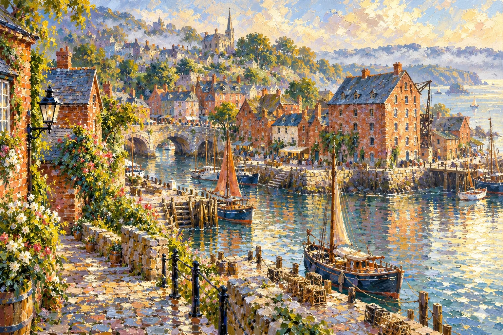
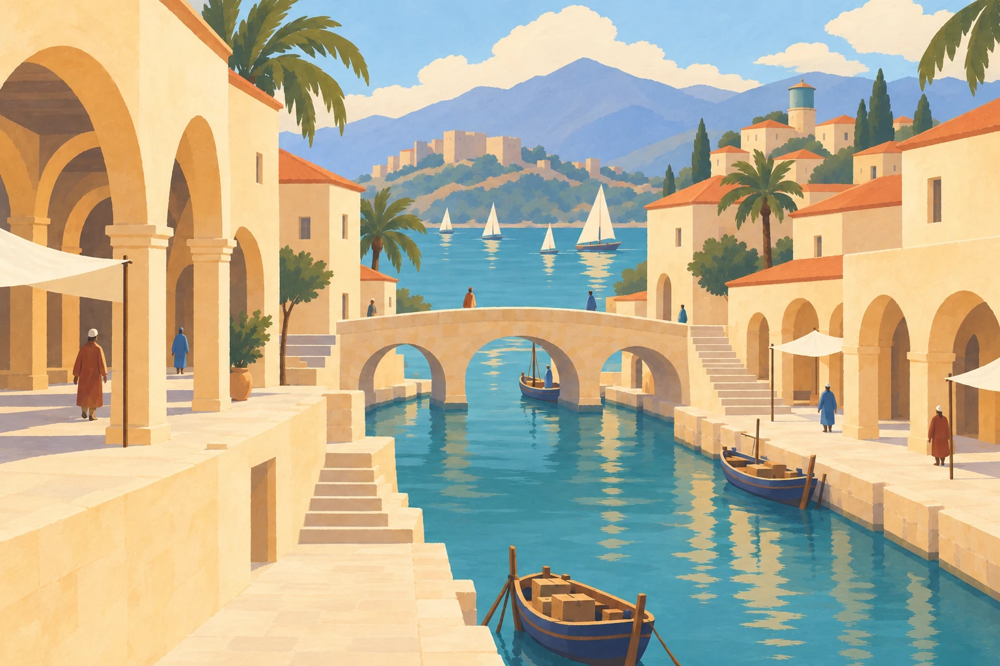
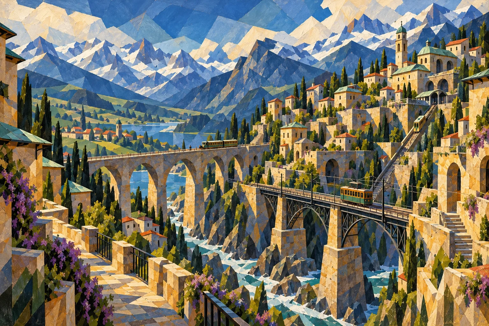
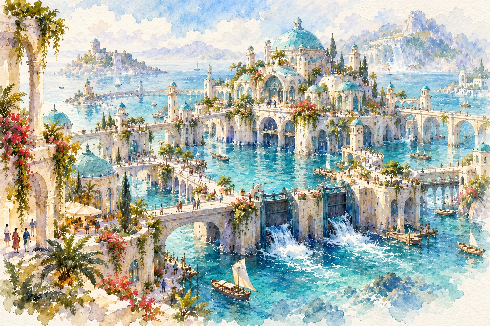

Solo
Choose one player and Start a solo life. Follow your own priorities, pause to read, and return whenever you like.
Find your feet, learn the everyday essentials, and meet a few familiar faces. The rest of the story is yours to discover.

You don't need a perfect plan. Start with one small choice, and take your time reading what it means.
Open the game, choose how you want to play and enter your name. For a first visit, start solo. Read The Chronicle and try the optional guided tutorial.
Check your cash, how rested you feel and six priority blocks. Open Places or select a building. Exploring a menu doesn't spend a block; local trips are free.
Try a work activity or something that interests you. Select it, read its cost and effects, then use its action button. Wait for the save to be confirmed.
Balance paid work with rest, learning or company. When you're ready, choose End month, review the bills and confirm. Unused blocks don't carry over.
Everyone has their own choices and resources. In a shared game, you take turns in the same changing neighborhood.
Choose one player and Start a solo life. Follow your own priorities, pause to read, and return whenever you like.
Choose the player count and enter everyone's names. After a turn, pass the screen to the next person and let them choose I'm ready.
Create a room and share its room link or code. Friends choose the join option and enter their names. The host starts once everyone is there; nobody can join after the game begins.
Crosswalk is turn-based. Reading, browsing choices and thinking take no time. The clock measures commitments, not real seconds.
Work, courses, relationships and journeys compete for these same blocks. A block is not a literal hour or day.
Paid work hours have a separate 200-hour monthly limit, shared by regular jobs, local work and paid story commitments.
Look for exact blocks, upfront cost and cash outcome, alongside a broad sense of effort and likely consequences. Paid work shows gross pay and take-home pay. A locked choice tells you what's missing.
Selecting an activity shows its details. The action button commits it. Conversations also show their choices and costs before you confirm a response.
Wait for the confirmed result before making another choice. If the connection is uncertain, use the save-recovery prompt instead of assuming nothing happened.
In a new life, open Work & learning. Entry roles need no earlier job or contact. Visit the named employer, spend one priority block on a free application, then separately accept an offer before choosing paid work. The board shows the actual role, requirements, wage and workplace.
For example, Alder café crew earn $3,072 take-home for 160 paid hours over two blocks, before any recovery repayment. Your actual preview includes the employer’s local wage and any repayment.
A short commitment uses 40 paid hours and one block. A demanding month uses 200 paid hours and three blocks. You cannot fit more paid work beyond the shared 200-hour limit.
The game uses a simplified 80% take-home assumption. These are fictional game values, not personal financial or tax advice.
Leave a cushion. Unpaid bills become arrears. A second consecutive missed settlement starts financial recovery: shared housing, one monthly administration block, paused paid tuition and studio upgrades, and 20% of take-home pay going toward arrears. Work, free learning, rest and relationships remain open. Clear the arrears and settle two bills on time to finish recovery.
Saved lives from earlier game formats are unsupported. Choose Start a new life to play. Older records are not migrated or deleted.
Campus foundation and advanced classes take two blocks/$600 and three blocks/$900. Free Library alternatives take three and four blocks. Read the next role’s requirements before enrolling.
Conversations can point toward jobs at another venue or town. References come from shared work; a lead does not guarantee hiring. Keep the employer, qualifications and any return journey in view.
One main contract can sit alongside separately chosen fixed commitments. Paid hours share the same monthly limit. Foreign offers show travel and home-bill costs before you accept; visiting another town does not move your lease.
Some everyday activities represent a whole month's habit. Their price is the full monthly extra, not the cost of a single coffee or meal.
Choose each habit at most once per month. It doesn't renew automatically. Ordinary groceries are already in your bills; these totals are additional spending.
Free options, including walks and reading, are available as you discover their places. Check each preview for its time and benefits.
Your journal keeps track of the life you're building. You don't need to do everything or follow a prescribed route.
Open Work & learning to compare venue-based careers and their preparation. Apply at the employer, accept an offer separately, then choose a shift. Free Library study and paid Campus courses build relevant preparation. Creative and community commitments offer other ways to spend your time.
Choose an aspiration in your journal: work, community, making, or a place to belong. You may change direction once per month. Earned achievements remain part of your history; your current foundations show how secure life is now.
Find people through Places and at their venues. Open a conversation, read what's being asked and choose for yourself. The journal remembers your own choices. This guide leaves their personal stories for you to discover.
Take a look around five places, each with its own working history. These paintings and short accounts introduce their beginnings; the map in your game shows what is available to visit.
Brick, gardens and ferry bells.
Impressionist oil
Cool, wet maritime · Urban working port
Alder Quay sits on a cool, wet maritime coast, where the sea softens seasonal temperature extremes. Rain arrives in passing showers and longer spells, with bright breaks between; winters are chilly and summers usually mild. River mist can blur the clockhouse at dawn, while wind makes an exposed ferry landing feel colder than a sheltered brick courtyard. Covered café seats, dry storage for library returns, and garden paths that drain well fit ordinary life here. Fine afternoons still leave plenty of room for outdoor suppers.
Alder Quay’s history follows the slow river. Its rain-dark brick terraces, gabled workshops, and clockhouse belong to a temperate port shaped by ferry crossings and ordinary working days. The quay connects homes with jobs and supplies; the gardens make room for growing among the buildings. These are overlapping parts of a neighborhood, with the river giving its routines a familiar rhythm.
Small beginnings have added another layer to that setting. Eli’s borrowed growing containers preceded a pantry garden, and Rowan’s seed swap started beside a library returns trolley. Tess took over a café whose afternoons were already measured by ferry bells. Together, these public beginnings give the quay a lived-in history: places become familiar through the meals, lending, tending, and journeys repeated around them.
Alder Quay’s largest historic community is Afro-Atlantic. Families with roots in coastal and island communities settled along the Bellweather shipping and ferry routes, and successive generations made the quay their home. Shared courtyards, local speech, and the autumn lantern walk grew through life in the same place. European-background families have long lived alongside them, while later arrivals brought connections to the Veyran Highlands, Caldera, and the Nacre ports. A resident can belong fully to the quay and have a different family history from the majority.
These connections can be followed through particular households. Eli and Asha share an Afro-Atlantic Bellweather background; Tess and Nico belong to an established white European-background family. Priya arrived from a Sri Lankan Tamil-background Pelagian household, and Jo brought East Asian and Caldera Latino family ties. Oren’s move linked a Veyran household to the ferry coast while his brother Miro remained in Glasssteppe. Their routes explain differences within one neighborhood, rather than making every resident a representative of a single origin.

Canals, arcades and shared tables.
Minimalist gouache
Mediterranean: warm, dry summers; mild, wet winters · Spacious, low-rise coastal suburb
Saffron Reach has a Mediterranean climate, with warm, dry summers and mild, wetter winters. Ochre arcades shade the walk between the market and the three-arch bridge, and courtyard gatherings often settle into the cooler evening hours. The ceramic water tower and careful water storage matter through the dry months. Winter brings more frequent rain to the canal steps, while spring and autumn offer gentler afternoons between unsettled spells. The working canals remain central to the district through both its sunny summer season and its cooler rainy months.
Saffron Reach developed around the everyday use of its canals. Cargo boats and commuters share the water, while narrow bridges connect ochre arcades and shaded courtyards. Cafés open toward the markets, making the walk between a crossing and a meal part of the same busy setting. The three-arch bridge and ceramic water tower are familiar landmarks in this warm port.
Its working history remains visible in small-scale beginnings. Leila first cooked beside the early boat shift on a portable griddle. Tomas learned on engines carrying handwritten maintenance dates, while Ada’s earliest screening used a borrowed sheet and six chairs. Canal tiles, repair work, food, and gathering places tell connected stories about the district’s ordinary use. The market and the courtyard keep that history close to everyday life.
Saffron Reach’s majority Latino population grew from coastal and island-port families who settled around the canals as ferry crossings and market routes became regular. Spanish family speech and place-names are familiar across Solenne, with differences between households and generations. The neighborhood’s late-summer canal evening brings chairs and conversation to the water’s edge. Its history is maritime: relatives on another shore, arrivals fitted around crossings, and homes linked by bridges and boats.
Leila and Tomas share a Cuban-background family history within that coastal community. Ada comes from another long-established Solenne Latino household. Sami’s Pakistani-background grandparents arrived through the Nacre shipping routes, and his family built a home in Saffron Reach with Urdu as well as the local Spanish around them. The district’s common customs developed through neighbors sharing a place while keeping distinct family memories. Its coastal Latino history has a different geography from Caldera’s inland desert settlements.

Hill paths and railway terraces.
Geometric modernist oil
Cold continental highland · Compact urban railway city
Glasssteppe has a cold continental highland climate, with long, cold, relatively dry winters and short, mild summers. Winter precipitation often falls as snow; low temperatures let it linger on shaded terraces between storms. Wind sweeps exposed platforms while stone corners shelter the switchback paths. Frost and thaw leave a different walking surface from one stair lane to the next. Pavel’s terrace garden has a short growing season, and the railway hall offers a place to warm up. Summer brings open windows, longer walks, and occasional rain rather than year-round snow.
Glasssteppe’s shape reflects the work of making a steep landscape habitable. Stone neighborhoods climb around an elevated railway, with retaining walls, switchback paths, and copper roofs defining the terraces. The railway hall and hillside funicular belong to a city where a journey includes a change in height. Paths between the stations and homes are as much a part of its character as the trains.
The smaller histories fit into those terraces. Ren learned the railway’s surroundings by walking the switchbacks. Sora’s bench began with salvaged station fittings and borrowed tools. Above the platforms, Pavel planted the reading garden’s first bulbs in mismatched tubs. These beginnings show how working railway spaces acquired places to repair, grow, and pause. The city’s quiet corners remain within earshot of its busiest routes.
Glasssteppe’s modern railway neighborhoods grew around East Asian families who settled in the Veyran Highlands over several generations, alongside older highland households and later arrivals. Chinese, Japanese, and Korean family communities keep distinct languages, names, and histories. Shared station streets and stair lanes gave them common local reference points without combining those traditions into a single interchangeable culture. Some family papers retain home-language writing beside the addresses used by the railway and post.
Ren, their mother Mei Chen, and their cousin Jian Wu belong to a Chinese-background family. Sora and their aunt Hana Mori share a Japanese-background family history. Yuna Park grew up in a Korean-background household here before moving to Pelagia; Tavi also made that highland-to-harbor move. Miro’s family and Pavel’s foothill migration are other parts of the city’s story. Spring reunion tables offer a shared neighborhood occasion, while the reasons people attend and the family customs they bring remain their own.

Tidal streets and harbor life.
Ink and watercolor
Warm, wet monsoonal archipelago · Small harbor town with a rural hinterland
Pelagia is warm through the year, with humid sea air and a monsoonal rhythm of wetter and drier seasons. Seasonal shifts in the winds bring periods of heavy rain across the Nacre islands, broken by lulls and clearer days. Raised walkways, covered landings, pumps, and tidal gates help the harbor accommodate rain as well as changing water levels. Drier months give gardens and outdoor gatherings longer openings, though showers still occur. Lio’s changing deliveries and Tavi’s raised beds belong to a place where the season matters alongside the tide.
Pelagia learned to live with the tide through practical construction. Glazed domes, stilt homes, raised walkways, and tidal gates stand above working flood basins. Its striking appearance is inseparable from that engineering: people built a place for daily life beside moving water, and continued maintenance keeps it usable. The harbor gardens and storm-gate towers show different sides of the same relationship with the coast.
The neighborhood’s record includes quieter beginnings too. Lio’s broth stall started with a pot shared among the first ferry shift. Esme began collecting donated shopping lists and ferry photographs, preserving ordinary lives alongside famous views. Tavi’s dated planting labels record attempts to grow familiar vegetables in raised harbor beds. Together, these details place cooking, gardening, and remembering within the wider history of a working tidal town.
Pelagia’s largest historic community is South Asian-rooted, formed through generations of movement among the Nacre island ports. Its cultural geography is inspired by Indian Ocean harbor communities: related households living on different shores, several home languages heard near the same landing, and local customs adjusted to a tidal setting. Families gather on the raised walkways when the storm season gives way to calmer evenings. The domes and engineering belong to this shared town, rather than to any single ethnicity or faith.
Mara and Lin, Lio, and Esme come from South Asian-rooted Pelagian families. Priya’s Sri Lankan Tamil-background childhood also belongs to this region, though she later settled in Alder Quay. Sefu’s long-established Afro-Pelagian family traces East African sea routes into the islands. East Asian newcomers have another route: Tavi and the Korean-background radio host Yuna Park moved from Glasssteppe through the railway-and-ferry connection. These households can share a harbor gathering while telling different stories about how their families arrived.
Desert light and a railway town.
Expressionist impasto at twilight
Hot, arid interior with cool desert nights · Dispersed rural mesa settlement
Ember Mesa lies in an arid interior, with hot summers, scarce and irregular rain, and a marked change between daytime heat and nighttime air. Clear nights often turn cool, especially outside the hottest months, and winter nights can be cold. Diner awnings and boardwalk shade give relief from the sun; courtyard suppers begin after the fiercest heat has eased. Water storage and careful garden watering matter through long dry spells. An occasional downpour can run quickly across hard ground, leaving the settlement briefly changed before the desert dries again.
Ember Mesa carries its railway-town past in timber shopfronts, old boardwalks, and a station clock. Modern life occupies the same streets: a diner, practical repair shops, and rooftop solar panels sit within the desert setting. Shade and a dependable timetable matter here alongside the broad evening light. The town’s appearance holds older forms and current working needs together.
Its local history also lives in places that began with very little. June’s bicycle bench first occupied a diner table after closing. Inez expanded a lending shelf to include books, tools, and seeds. Kit began drawing on clean order slips between diner jobs, finding everyday subjects beneath the big desert view. Such beginnings give the town a scale beyond its skyline: a cleared table, a useful shelf, and a small page are all part of how people have made a life here.
Ember Mesa belongs to a predominantly Latino desert region whose older settlements preceded the railway town. Caldera’s family histories follow inland routes, irrigation channels, and the changes that rail travel brought to households already living there. Spanish place-names survive beside station names, and courtyard suppers wait for the fiercest heat to pass. The autumn seed-and-preserve exchange is one familiar local occasion. This inland history differs from Saffron Reach’s island ports and canal crossings.
Inez’s Mexican-background family and June’s long-established Caldera Latino household are part of that regional continuity. East Asian families also made homes beside the desert rail line. Jo grew up within that East Asian and Latino community before settling in Alder Quay; Kit grew up at the quay and later chose an adult home in Ember Mesa. Bea is now growing up there with Kit. Their cross-regional family adds another path through Caldera’s history without making migration a break from belonging.
Trips inside your current town are free. Regional journeys use a fare and priority blocks; read the preview before leaving. A visit keeps your existing home lease and main-job contract.
Relocating home is a separate, two-block commitment with its own cost and new monthly bills. A studio upgrade also has an upfront price and higher ongoing rent. Review both before committing.
The Chronicle shows the calendar and weather. Effects follow the region you're in and appear in activity previews, with a broad sense of effort. Weather doesn't mean every outdoor choice is unavailable.
Places can change over time. The map and Places menu show what's actually accessible in your room; a building pictured here isn't a promise that it is available yet.
68 portraits and backstories, each 250–500 words. Meet generations aged 2–91, with biological relatives, blended and adoptive households, and chosen families across the map. Open a profile to spend a little time with the life behind a familiar face.
A familiar face is more than a task to finish. Browse these spoiler-free portraits by geography at your own pace. Each backstory stays with public background and everyday life before your paths cross. This is the wider world: some residents appear in occasional encounters or family stories rather than as regular neighbors. Which people are available depends on where your life takes you.
68 people · Open a backstory to read their beginnings
22 people

Songwriter
Mina finds time for songs in the quiet after closing shifts. Handwritten verses and an unhurried melody are part of her everyday life.
Alder QuayBiological child of Solange Morel · Biological grandchild of Lucien Morel
Mina learned to finish songs in the quiet after closing shifts, when there was finally enough room to hear a line through to its end. The day's small sounds stayed with her: a chair being put away, a door catching, the last few words of a conversation. She became accustomed to working with whatever time remained, keeping a verse alive on paper until she could return to its melody.
Mina grew up in Alder Quay in a family with relatives along the Solenne coast. Visits brought familiar voices with slightly different words for the same ferry landing or evening meal. At home, she knew the quay’s autumn lantern walk and the habit of bringing a dish to a neighbor’s table. Those ties place her within the port’s overlapping cultures. Her songs remain her own work, shaped by what she notices and chooses to put on a page.
Handwriting suited that kind of songwriting. A page could hold a half-finished thought without asking her to perform it. Mina traded verses with Eli on the backs of pantry lists, fitting words around the practical business of what was needed and what was already there. Sharing those pages was easier than sharing her singing voice. The exchange gave her writing an ordinary place in the day, alongside food and errands.
She developed a patient ear for the difference between a line that looked good and one that felt natural to sing. Phrases could change when spoken aloud; a crowded sentence might need more space, or a plain word might carry the whole verse. Her pages gathered crossings-out as well as finished lines. Returning to a song after a shift became part of the work, with no guarantee that the first version was the right one.
In Alder Quay, Mina's life as a songwriter is woven into these modest routines. She has handwritten verses, unhurried melodies and a habit of listening after the louder work of the day is over. Her songs come from paying attention long enough for something familiar to sound different. The practical setting matters: a scrap of paper is easy to carry, a tune can be held in memory, and a quiet stretch after closing can give both a little shape.

Gardener & pantry neighbor
Eli began growing food in borrowed containers. He has a practical fondness for herbs, shared suppers and making a small patch of earth useful.
Alder QuayParent of Asha · Biological child of Celia Baptiste · Biological sibling of Dahlia Baptiste · Biological aunt/uncle of Imani Baptiste · Biological aunt/uncle of Noel Baptiste
Before there was a pantry garden, Eli grew food in borrowed containers. Working on that scale made each small difference visible: how quickly one pot dried, where a little more light reached, which leaves looked ready to cut. He learned by tending what he had and checking it again the next day. Useful growing began with attention, a little space and containers that had already served somebody else.
Eli belongs to one of Alder Quay’s Black Afro-Atlantic families, whose grandparents’ generation settled along the Bellweather ferry routes. Family stories return to island crossings, the first rented rooms near the quay, and the neighbors who stayed nearby as households grew. Asha shares that family background. At the autumn lantern walk, Eli recognizes familiar households from different stretches of his life, while his teenage child can experience the same evening through friends and a notebook of their own.
The first harvest he could put to use was a handful of herbs. He carried it to a supper where everyone had brought something small, adding his contribution to a meal assembled from many modest ones. It was an uncomplicated beginning, but it gave the growing a purpose beyond the pots. A few leaves could change the smell and taste of a shared dish, and there was pleasure in knowing where they had come from.
That practical connection between tending and eating has stayed with him. Eli likes herbs, shared suppers and patches of earth that earn their keep. The work includes the less picturesque parts of gardening: checking moisture, making room, clearing spent growth and remembering what needs attention. He approaches those tasks as part of keeping food within reach. The garden's usefulness is measured in things that can actually be picked, prepared and passed around.
His everyday life in Alder Quay has room for words as well as plants. He and Mina used to exchange handwritten verses on the backs of pantry lists, putting songs beside the ordinary business of supplies. It is a fitting detail for someone whose interests meet so naturally around a shared table. Eli's background is built from small beginnings that became regular practices: a borrowed container, a useful harvest, a contribution to supper and the steady care that makes another handful possible. Eli is also Asha’s parent. His fifteen-year-old child likes drawing imaginary small gardens and is working toward a short personal sketchbook.

Repairer & maker
Jo learned repair by keeping well-used neighborhood things working. Their bench is full of labeled offcuts, useful tools and careful handiwork.
Alder QuayParent of Kit · Grandparent of Bea
Jo learned repair by keeping the neighborhood's unfashionable things working. The early objects were ordinary ones: stools, lamps and a sign that nobody had budgeted to replace. Each came with a practical question about what could still be used. Looking closely mattered more than judging appearances. Something scratched or awkward might have many useful years left, provided someone took the time to understand the loose joint or failing part.
Jo grew up in an East Asian family that had made its home in Caldera’s Latino desert community. Older relatives kept family correspondence from across the sea alongside Spanish-language letters from neighboring households. Jo moved to Alder Quay as a young adult, where Kit later grew up. Kit eventually made a home in Ember Mesa, bringing the family’s Caldera connection into another generation. Jo, Kit, and Bea share that East Asian and Latino family history across two towns, without all needing to live in the same place.
Working on well-used objects taught Jo to read the marks of everyday handling. A wobble could say something about where weight was being placed; worn edges showed which surfaces met hands most often. Repair meant making sense of those habits before deciding what to change. Their approach developed around careful inspection, modest adjustments and the satisfaction of putting a familiar object back into service without erasing everything that made it familiar.
Their bench reflects that history. Useful offcuts are labeled, tools have jobs to do, and small pieces are kept with enough order that they can be found again. A leftover strip or block is easier to use when its purpose and size have not been forgotten. This is the quiet work behind making things: sorting, measuring, testing a fit and clearing enough space to see what is actually in front of them.
In Alder Quay, Jo's identity as a repairer and maker has grown out of this steady contact with everyday objects. Their handiwork is careful because the things involved must survive ordinary use after they leave the bench. A stool still needs to bear weight; a lamp still needs to do its job. Years of working with such needs have given Jo a grounded sense of usefulness, along with an appreciation for materials that might otherwise have been overlooked. The labeled scraps remain part of that history. Jo is the parent of Kit, an adult comic artist and diner dishwasher with their own life in Ember Mesa. Jo is also grandparent to Kit’s two-year-old child, Bea, who lives in Ember Mesa and enjoys stacking chunky wooden cups.

Café owner & ferry dispatcher
Tess knows coffee orders and the last ferry by heart. Her days are shaped by the café counter, the window chalkboard and the rhythm of the crossings.
Alder QuayParent of Nico · Biological child of Ruth Harper · Biological sibling of Oliver Harper · Biological aunt/uncle of Nell Harper
Tess took over a café whose regulars already measured the afternoon by ferry bells. The place had its own established rhythm, with conversations and coffee orders fitted around the crossings. Learning the café meant learning those patterns as well as the work behind the counter. A customer glancing toward the water or checking the time could be thinking about the next part of a journey while still finishing a cup.
Tess comes from a white European-background family established on the Bellweather coast. Her family is one of several communities that have lived beside Alder Quay’s larger Afro-Atlantic population for generations. She remembers the same autumn lantern walk and ferry-side gatherings as neighbors with different family histories. Nico shares that Bellweather family background. Their place in the quay belongs to ordinary home life as well as Tess’s café, and Nico’s childhood has room for interests unrelated to the counter or the crossings.
When Tess learned ferry dispatch work, the two timetables began to overlap. Service at the café and movement at the crossing each required attention to who was arriving, what was ready and how much time remained. The combination made the last ferry part of her everyday knowledge. It also sharpened her sense of how practical information travels through a busy place, sometimes in a quick question asked on the way to the door.
A chalkboard by the window became a place to check both supper and the last crossing. Its usefulness came from being where people already looked, close to the life of the café and the activity beyond it. Updating a board, keeping track of orders and remembering a familiar preference are small acts, but together they shape the feel of a working day. Tess's experience has been built through that repeated attention to things people need to know.
Her life in Alder Quay is still marked by the café counter, the window and the rhythm of the ferries. She knows coffee orders and the last crossing by heart, carrying two kinds of local knowledge in the same working day. One belongs to a particular cup and the person who ordered it; the other belongs to the timetable shared by everyone making the journey. The café's old habit of listening for ferry bells remains a fitting starting point for her story. Tess is Nico’s parent. Her nine-year-old child likes fallen leaf shapes and pretend ferry tickets, with family moments spent near the café window.

Librarian & volunteer gardener
Rowan carries library returns and seedlings in the same bicycle basket. A seed swap beside the returns trolley became one of their regular pursuits.
Alder QuayRowan's seed swap began beside the library returns trolley. It was a small extension of a place already devoted to things being borrowed, brought back and passed between people. The first gathering had more empty pots than gardeners. That unpolished beginning made it an easy room to enter without knowing much: there was space to ask basic questions, look at what had been brought and take part without arriving as an expert.
Rowan’s family has lived around Alder Quay long enough for old photographs to show familiar streets under different shop names. Family recollections use the quay’s neighborhood names as readily as the official ones. The autumn lantern walk, shared courtyard tables, and relatives living a few ferry stops apart were part of their upbringing. Rowan’s connection to that local culture gives them familiar places to return to, while the seed swap has introduced people whose routes into the neighborhood were quite different.
The idea fitted Rowan's life as a librarian and volunteer gardener. Both interests involve keeping useful things available and helping people find somewhere to begin. A book needs to be found on the right shelf; a seed needs a suitable place to grow. Rowan's practical attention moves comfortably between those tasks, with labels, ordinary questions and the steady work of putting things where someone can use them all playing a part.
Their bicycle basket carries library returns and seedlings, a familiar mixture of work and gardening. The contents need different kinds of care: a book should stay dry, while a young plant needs enough room for its leaves. That daily arrangement says something about the scale of Rowan's interests. Growing and reading fit into the routes they already travel, and a small container of seedlings can sit alongside the books making their way back to the library.
In Alder Quay, the seed swap has become one of Rowan's regular pursuits. Its beginnings remain modest and practical, rooted in an available corner and a gathering that left plenty of room for newcomers. Rowan's background brings the library and the garden close together without making either complicated. There are returns to sort, plants to tend and useful information to share. The empty pots at that first meeting belong to this history too: simple objects that made starting seem possible, even before there were many gardeners in the room.

Night-bus cleaner & mapmaker
Patient and observant, Bram draws the town after the shops close. He keeps pencil stubs and fills his notebooks with everyday streets and places to sit.
Alder QuayBram's first night-route drawings appeared on the backs of cleaning rosters. His work cleaning night buses put him alongside the town at hours when many shop windows were dark and familiar streets felt different. A roster already belonged to that part of his day, so its blank side made a convenient place to draw. Pencil marks gradually turned working paper into a record of the routes he knew after closing time.
Bram grew up among Bellweather families who visited one another by ferry as readily as by street. A visit could involve a boat, a walk, and somebody explaining which entrance was still open after supper. The quay’s local place-names and autumn lantern gatherings were familiar parts of that upbringing. His family background sits within Alder’s shared port culture; the particular attention he later gave to night routes came from his own working journeys and the mistakes that a paper map could contain.
One late journey gave those drawings a more exact purpose. A promised shortcut ended at a locked gate, leaving a line on a map that could not actually be walked. Bram began noting closing times alongside streets. Seats and shelter received the same attention. A route could look simple on paper while being tiring, exposed or unavailable in practice, and he wanted his notes to reflect the place as he encountered it.
His patience shows in the small things he records. A place to sit can matter as much as the next turning; a covered stretch can change the character of a wet walk. Bram keeps pencil stubs and fills notebooks with these ordinary details, giving himself room to correct a mark or add a note. Drawing by hand suits information gathered gradually, in the spaces between work, travel and another look at a familiar corner.
The result is a mapmaker's life closely tied to his cleaning work and to Alder Quay after the shops close. Bram has learned to notice what remains available when daytime landmarks have shut their doors. His notebooks attend to the practical experience of moving through town: where a route goes, when it can be used and where someone can pause. That attention began with the backs of rosters and a blocked shortcut, and it remains visible in the modest scale of his drawings. Bram’s careful night-route notes have something in common with Ren’s practical passenger directions in Glasssteppe.

Coat mender & miniature-theatre maker
Oren learned mending among relatives who saved every useful button. He keeps them in old tea tins and makes hand-sized scenery after work.
Alder QuayYounger brother of Miro
Oren learned mending among relatives who kept useful buttons long after their coats had worn out. Those saved pieces gave repair a tangible history: a fastening could outlast one garment and find work on another. He grew familiar with the patient business of matching, attaching and making things serviceable again. Old tea tins became a natural place to keep the collection, with their small contents waiting for a suitable piece of cloth.
Oren and his older brother Miro grew up in the same family near the Veyran railway settlements. Their relatives’ saved buttons and tea tins traveled between households as people moved for work or made new homes. Miro remained in Glasssteppe, while Oren settled in Alder Quay as an adult. The brothers share an upbringing even though different town customs now shape their daily surroundings. Letters and visits keep that household history connected across the highlands and the coast, with familiar family objects finding places in two different homes.
Coat mending gave him an eye for scale and detail. A small adjustment can change how a sleeve hangs or how comfortably a fastening sits. The work asks for careful handling and a willingness to examine the same area more than once. Oren's attention settled into those measured tasks, where the materials are close at hand and progress may be visible in only a few neat stitches or a better-fitting edge.
His miniature theatre grew from a ferry trip that he turned into a tiny cardboard comedy. The idea gave his hands a different kind of work: scenery could be shaped, moved and arranged within a space small enough to hold. Over six years he gathered a collection of these little settings. Hand-sized pieces allowed an everyday crossing to become a scene, and a scrap of card could suggest something much larger than itself.
In Alder Quay, mending and miniature making still share Oren’s life. When he has the energy, he makes scenery after a little coat work, keeping his buttons in the old tea tins. Cloth must sit properly and card must hold its shape; those small details still interest him. Miro remains in Glasssteppe, making paper comedies after years of painting railway signs.
Oren has lymphoma and is currently receiving chemotherapy. He has lost much of his hair, and fatigue makes his daily capacity variable. Some afternoons he works seated with a tea tin and a few cardboard pieces within reach; on others he leaves the miniature stage unfinished and rests. He asks Miro for shorter calls on tiring days and accepts help arranging groceries when he wants it. The brothers still have room for a joke about a cardboard passenger missing a tiny ferry. Oren chooses what to work on, what to leave, and when he would rather have company without a project.

Early-shift baker
Hugo knows bread through years of early starts and repeated batches. He judges dough by touch and writes his own notes beside recipes.
Alder QuayChosen brother of Jonah Bell
Hugo learned bakery work through early starts and repeated batches. Much of that education came from doing familiar tasks again and noticing what had changed since the previous morning. Dough could feel different under his hands even when the recipe looked the same. The work gave him a respect for preparation and timing, along with the understanding that a reliable result is built from many small decisions made before the bread is ready.
Hugo was raised in an Alder Quay family with relatives in neighboring Bellweather ports. Family gatherings included people arriving on different ferries, dishes set down wherever there was room, and someone remembering a household that had moved farther along the coast. He grew up with the quay’s autumn lantern walk and its mixture of local accents. Those shared surroundings are part of his home history; the particular judgment he brings to bread came through his own years of bakery practice.
Touch became an important part of his judgment. A recipe could provide a starting point, but working the dough gave him information that measurements alone could not carry. He developed the habit of writing his own notes beside recipes, keeping practical observations close to the instructions. Those additions made the pages records of actual batches, including adjustments worth remembering and details that might otherwise disappear into the rhythm of another early shift.
Reliable bread became Hugo's way of making himself useful. There is something direct about bakery work: the result has to be ready, and people have to be able to eat it. Repetition matters because yesterday's good batch does not do today's work. His steadiness grew through returning to the same demands, keeping track of the stages and learning how much attention an ordinary loaf can require before it reaches the counter.
Explaining the work to someone else brought a different kind of patience into that routine. Things his hands had learned through practice needed words, and an instruction that felt obvious could leave out an important detail. This remains part of Hugo's background as an early-shift baker in Alder Quay. His knowledge lives in the feel of dough, in notes crowded beside recipes and in the effort of describing a familiar task clearly enough for another person to understand what his hands already know.

Retired weather observer
Priya spent years writing weather reports. These days she carries a well-protected notebook and enjoys listening to the different sounds of rain.
Alder QuayBiological child of Kamala Arul · Biological parent of Dara Arul · Biological sibling of Anil Arul
Priya spent years writing weather reports that other people used to plan their work. Observation had a practical destination: a description of changing conditions became information somebody else needed. That responsibility encouraged careful attention to what was actually happening and to how it was recorded. The sky could be familiar without being identical from one day to the next, and her work depended on noticing the differences without losing sight of the larger pattern.
Priya grew up in Pelagia in a Sri Lankan Tamil-background family before moving to Bellweather for her weather-reporting work. Tamil family letters and the harbor’s shared language both belonged to home. Older relatives remembered routes between island households, while Priya’s own move added a colder, rainier coast to that family map. She has lived in Alder Quay for many years. Her South Asian heritage and Pelagian childhood remain present in family letters, familiar words, and her memories of visits between island households.
The habits of reporting shaped the way she carried a notebook and protected it from the weather she was observing. A useful record had to remain readable after being taken outside. Pages, handwriting and the conditions around them all mattered. Priya became accustomed to giving passing details a place on paper, turning something that might otherwise be remembered vaguely into an observation she could return to and compare with another day's notes.
Retirement changed the pace and purpose of that attention. She had time to listen to rain without turning every sound into a prediction. Water striking one surface could sound quite different from water striking another, and there was room simply to hear it. The years of observing remained with her, but the experience of weather could stretch beyond the demands of a report. A passing shower could occupy a moment without needing to become useful information.
These days, Priya still carries a well-protected notebook around Alder Quay and enjoys the different sounds of rain. Her background is present in the care she takes with small observations and in her comfort with watching conditions change. Retirement has given those longstanding habits a quieter setting. There are still details worth noticing: a shift in the air, the pattern of drops or the way rain fills the space between other sounds. She has more time to stay with them now. Priya’s habit of keeping uncertainty attached to an observation could make for a useful conversation with Tavi, who tests crops by Pelagia’s harbor.

Student & notebook illustrator
Asha, Eli’s teenage child, fills a notebook with imaginary small gardens. They would like to finish a short sketchbook that feels like their own.
Alder QuayChild of Eli · Biological grandchild of Celia Baptiste · Biological nibling of Dahlia Baptiste · Biological cousin of Imani Baptiste · Biological cousin of Noel Baptiste
A younger resident with family, school and everyday interests. Adults remain responsible for care.
Asha is fifteen and lives in Alder Quay, where they are a student and an enthusiastic notebook illustrator. Eli is their parent. The gardens around their neighborhood have given them plenty of things to look at, but the gardens in their notebook have a character of their own. A tiny path might curl around an enormous leaf; a whole sitting place might fit inside a drawing no bigger than a hand.
Asha shares Eli’s Black Afro-Atlantic family background and is growing up among the same Bellweather ferry towns that appear in family stories. The quay’s autumn lantern walk is familiar, but a school friend’s company or a shape worth drawing may matter more to them than an adult’s recollection of an earlier year. Family history gives Asha connections and familiar people. Their own interests, friendships, and unfinished sketchbook still belong to the ordinary, changing life of a fifteen-year-old.
Their interest begins with noticing shapes. A planter, a bench, and an awkward corner can become the starting pieces of an imagined garden. Asha likes trying them in different arrangements on paper. Drawing leaves room to move a path without digging it up, or to give a little patch of shade a larger part in the picture. The page can be changed as often as the idea needs.
The notebook fits alongside school and family routines. In the park, community room, or garden with Eli, Asha has familiar places in which to draw. Eli’s practical interest in growing food is part of that background, while Asha enjoys deciding how an invented space might look. Their pages are personal sketches, with room for unlikely shapes and questions that do not need an immediate answer.
Some drawings arrive easily; others remain as a few lines waiting for another look. A friend’s polished picture can make their own page seem scrappy; keeping an imperfect sketch in the notebook takes a little practice too. Asha is learning what it feels like to bring a small creative project to an end. They want to finish a short sketchbook, choosing which pages belong together and letting a picture be complete enough to keep. That wish has the scale of a teenage project: something to take care over, share if they choose, and recognize as their own work.

Elementary-school child & leaf-shape collector
Nico is Tess’s nine-year-old child. Fallen leaves and hand-drawn pretend ferry tickets give them small ways to arrange the world around the café window.
Alder QuayChild of Tess · Biological grandchild of Ruth Harper · Biological nibling of Oliver Harper · Biological cousin of Nell Harper
A younger resident with family, school and everyday interests. Adults remain responsible for care.
Nico is nine, an elementary-school child growing up in Alder Quay. Tess is their parent, and a seat near the café window is one of the familiar settings of their family life. Beyond the glass, people come and go around the ferry timetable. On Nico’s side of the window, a pencil and a piece of paper can give a quiet moment a small plan of its own.
Nico shares Tess’s white European-background Bellweather family history. They are growing up in a quay neighborhood where families with Afro-Atlantic, European, and more recently arrived roots share the same streets and public gatherings. At the autumn lantern walk, Nico notices the shapes and colors nearby, with Tess remaining responsible for their care. Family traditions are part of their surroundings, alongside school and play; a nine-year-old can enjoy an evening without needing to explain the history behind every part of it.
They like collecting the shapes of fallen leaves. One has a pointed end, another a rounder edge, and a third seems quite different when turned sideways. Sorting them offers several possible answers: a group can be made by size, outline, or the detail that catches Nico’s eye that day. Drawing a leaf lets its shape stay on the page after the leaf itself has been put away.
The ferries suggest another kind of paper collection. Nico draws pretend tickets, deciding where a border should go and how much room to leave for a name. A ticket can become part of an imaginary journey, with the next version arranged differently. These are playthings made at a table while Tess is nearby. The real café and ferry work belong to the grown-ups carrying out those jobs.
School, family time, looking, and drawing make up the ordinary scale of Nico’s world. Nico would like to make a little picture book of leaf shapes, leaving room for a leaf they cannot name yet. A wrong name can be disappointing for a moment, but the shape is still worth drawing. They have plenty of time to change what interests them. For now, the pleasure is in gathering a few details from a familiar place and finding an arrangement that makes sense to them, right there on the paper.

Retired housing clerk & competitive domino player
Celia spent thirty years keeping housing records straight. Retirement has made room for fierce domino games, experimental paintings and a firmer answer when somebody assumes she is free.
Alder QuayBiological parent of Eli · Biological parent of Dahlia Baptiste · Biological grandparent of Asha · Biological grandparent of Imani Baptiste · Biological grandparent of Noel Baptiste
Celia kept tenancy records for thirty years and now plays dominoes at the covered ferry hall. She raised Eli and Dahlia in a small quay flat. She loves a decisive win, dislikes being treated as everybody’s available grandmother, and occasionally repeats a confidence when a story gets too good.
The Baptistes belong to Alder’s long-established Black Afro-Atlantic community. Celia is grandmother to Asha through Eli, and to Imani and Noel through Dahlia. She remembers their preferences with considerable accuracy, then resents the suggestion that remembering them means she should organize every gathering. Two agreed school pickups a month suit her. An expanding list of favors does not.
At the ferry hall, she recently lost a doubles match because she refused to abandon an ambitious opening. She blamed the noise, then the table, before admitting that her partner had warned her. They stayed for another game. Her competitiveness can make an afternoon sharper than necessary, but she brings the same wholehearted delight to an opponent’s genuinely clever move.
A spare room in her flat holds family boxes and the beginnings of several paintings. Celia has set a collection date for the boxes, written it twice, and left space by the window for a proper easel. She does not yet know whether she enjoys painting or simply enjoys wanting something that nobody else needs. She is willing to find out badly, with cheap brushes and uneven results.
Alder’s dense streets and covered landings let her see familiar people without arranging a whole excursion. She loves that ease and sometimes finds it oppressive. When a neighbor repeated a confidence she had carelessly passed along, she had to make an uncomfortable apology. Celia can be funny, affectionate and indiscreet in the same afternoon. Her next ambition is a winter league win, with enough private hours left to make a thoroughly unpromising painting.

Parcel-depot supervisor & amateur sprinter
Dahlia can untangle a missed-delivery queue and organize a crowded household. The running track is where she has started asking what she wants for herself.
Alder QuayBiological child of Celia Baptiste · Biological parent of Imani Baptiste · Biological parent of Noel Baptiste · Spouse of Malik Reed · Biological sibling of Eli · Biological aunt/uncle of Asha
Dahlia handles missed deliveries and shift swaps at the parcel depot. She had Imani at twenty-two and Noel nine years later. After years of organizing everybody’s evenings she joined a track club; her second marriage to Malik includes explicit agreements about shared domestic work.
She is Celia’s younger child and Eli’s sister, part of the same Black Afro-Atlantic Bellweather family. Her children, Imani and Noel, share another biological father outside the household. Malik is their stepfather. Dahlia and Malik have been married four years; the division of shopping, pickups and evening meals is something they discuss explicitly, even when a discussion arrives at an inconvenient hour.
At the depot, she once volunteered to cover a late shift before remembering that she had promised to watch Noel’s first school film showing. She found another supervisor, accepted the awkwardness of asking, and arrived just before the lights went down. The incident embarrassed her because nobody had forced the original offer. Being the fastest person to solve a problem had become a habit she could mistake for generosity.
Her track club gives her a different measure of progress. A disappointing time can annoy her for an evening without threatening anyone’s supper or wages. She likes the clean pleasure of a good start and the gossip during the cooldown. Training twice a week is a commitment she protects, although rain, a crowded shift and ordinary fatigue sometimes defeat it.
Dahlia wants the depot promotion, including the pay and authority, while refusing a position that quietly means permanent availability. Alder is where her friends, family and working knowledge are concentrated, and staying has been a deliberate choice. Familiar neighbors can make ambition feel oddly public. She is learning to state it plainly. When she snaps at somebody who did not deserve it, her best repair is usually a direct apology and a changed plan.

Screen-print apprentice & delivery cyclist
Imani wants her posters noticed for their design. Between a screen-print apprenticeship and delivery shifts, she is deciding how far she needs to travel to feel independent.
Alder QuayBiological child of Dahlia Baptiste · Stepchild of Malik Reed · Biological grandchild of Celia Baptiste · Biological sibling of Noel Baptiste · Biological nibling of Eli · Biological cousin of Asha
Imani prints band posters in a shared studio and pays her share with delivery shifts. She has a tender relationship with younger brother Noel and a touchy one with praise: she wants credit for composition, not for being Celia’s talented grandchild. She is considering a seasonal studio job in Solenne.
Dahlia is her mother, Celia her grandmother and Eli her uncle. She and Noel are full siblings within a Black Afro-Atlantic Bellweather family. Malik became her stepfather when she was sixteen. She appreciates that he asks before offering advice, though she sometimes hears a judgment in a perfectly ordinary question. Their easiest conversations happen while they are doing separate jobs in the same room.
A small band recently chose her roughest poster sketch over the polished version she preferred. Imani spent an irritated evening insisting they had missed the point, then noticed how clearly the rough layout could be read from across the studio. She kept the payment and changed the design. Learning to work for a client has required a different kind of confidence from defending a sketchbook page.
The printing itself can absorb her for hours. Sending an invoice or checking that a delivery fee covered the ride feels much less compelling, until rent makes it urgent. She is saving for a seasonal studio job in Solenne and has begun comparing real room costs with the appealing photographs. Leaving might broaden her work; it would also put distance between her and a family that knows every early version of her ambitions.
She keeps one weekly afternoon for Noel, who often wants backgrounds for a stop-motion scene. Sometimes they work; sometimes they buy a snack and disagree about a film. Imani is affectionate and protective without agreeing to become another parent. Alder’s wet cycling routes are exhausting, its studio friendships sustaining. For now, she is trying to finish a portfolio strong enough that staying or leaving can both be genuine choices.

Schoolchild & stop-motion enthusiast
Noel turns paper boats and kitchen objects into stop-motion adventures. The exciting part is showing the finished film; the harder part is sharing the decisions that make it.
Alder QuayBiological child of Dahlia Baptiste · Stepchild of Malik Reed · Biological grandchild of Celia Baptiste · Biological sibling of Imani Baptiste · Biological nibling of Eli · Biological cousin of Asha
A younger resident with family, school and everyday interests. Adults remain responsible for care.
Noel makes short stop-motion adventures with paper boats and borrowed kitchen objects. His sister Imani helps with backgrounds when she has time. He likes showing the finished clip much more than admitting how often a scene fell over, and recently removed a classmate’s credit after an argument, then restored it.
He lives in Alder Quay, in the Black Afro-Atlantic Baptiste family. Dahlia is his mother, Imani his older sister and Malik his stepfather. Celia is his grandmother; Eli is his uncle and Asha his cousin. The adults have different rules about where a cardboard harbor may stay overnight. Noel thinks a set should be protected until its last scene, even when it occupies half the kitchen table.
One recent afternoon, a paper boat tipped over every time he moved its passenger. Imani suggested a wider base and then left him to try it. He disliked the first correction, tried three more elaborate solutions and eventually used her idea. The crooked boat that survived became his favorite part of the film. He still introduces it as an ingenious rescue scene rather than an afternoon of frustration.
Working with a classmate is less controllable than moving paper figures. After an argument about the ending, Noel removed his friend’s name from the credits. Dahlia helped him think through what the name represented. He restored it and apologized; the next session included time to hear both endings. He is learning that being the director does not mean getting every choice.
He hopes to finish a two-minute piece for the school showing, but a dry afternoon or an invitation to play can easily change his priorities. The sheltered corners near home make good tiny sets, while rain ruins outdoor plans. Adults handle recording permissions, equipment and journeys. Noel’s responsibilities remain small and learnable: put borrowed things back, ask before filming somebody, and leave enough of the day for simply being eleven.

Lift technician & social salsa dancer
Malik is comfortable diagnosing a stalled lift and less comfortable naming a difficult feeling. His marriage, stepfamily and dance nights ask for different kinds of confidence.
Alder QuaySpouse of Dahlia Baptiste · Stepparent of Imani Baptiste · Stepparent of Noel Baptiste
Malik married Dahlia four years ago. He repairs lifts across the port and enjoys dance nights where nobody needs him to solve a household dispute. He takes step-parenthood seriously without demanding a parental title. He and Imani are cordial but still learning how much advice is welcome.
His Reed family shares Alder’s Black Afro-Atlantic background but has no biological connection to the Baptistes. He moved from another Bellweather port and married Dahlia four years ago. Imani and Noel already had their own family history. Malik takes their preferences seriously, including the names they use for him and the occasions when they would rather speak to their mother or to each other.
He once spent an entire supper quietly annoyed that an agreed chore had been left to him. By the time he mentioned it, his careful tone sounded like a verdict. Dahlia asked why he had waited so long. The question stayed with him. He is trying to raise the small difficulty while it is still small, instead of keeping an invisible account and presenting the total later.
At work, he is studying toward supervising lift inspections. He likes a completed check that another technician can understand, and he wants the extra authority without becoming a person who cannot hear a colleague’s concern. At a dance night, the stakes are lighter. He can miss a turn, laugh and try it again. That ordinary public embarrassment has become one of his favorite freedoms.
Alder offers short walks to friends and enough evening activity to feel lively after work. Some days Malik misses being less recognizable. In the household, he is reliable with a job he has agreed to and more hesitant when the request is emotional. He and Imani are still discovering where advice is useful. With Noel, a quiet errand can be easier than an ambitious family outing. Their closeness has room to develop without a deadline.

Retired hairdresser & home-film collector
Ruth’s home films contain crooked horizons, bad haircuts and people laughing before they notice the camera. She intends to keep the awkward moments in the family screening.
Alder QuayBiological parent of Tess · Biological parent of Oliver Harper · Biological grandparent of Nico · Biological grandparent of Nell Harper
Ruth ran a small hair salon before retirement and owns boxes of family home films that she labels with irreverent captions. Her daughter Tess remembers her as always busy; Oliver remembers someone always asking questions. Ruth likes both versions until they become an excuse to tell her what she should do now.
She is the biological mother of Tess and Oliver, grandmother of Nico and the traveling Nell. The Harpers are an established white European-background Bellweather family. Ruth once fitted family occasions around salon appointments, and her children remember that busy period differently. She can enjoy their competing stories until somebody uses them to explain exactly who she must be at seventy-six.
A box of old film labels recently revealed three events all called “summer picnic.” Ruth began sorting them, recognized a disastrous haircut she had given Oliver, and laughed hard enough to lose her place. She wants to include that clip. Oliver wants a right of reply. The screening has become a small negotiation about affection, embarrassment and who gets to narrate a shared memory.
Her labeling is meticulous; the rest of the flat is considerably less so. She makes generous promises while a plan is exciting, then has to admit that two outings and a late supper in one day are more than she wants. An afternoon nap is a practical preference she has stopped defending. Visitors who arrive afterward usually find her better company.
Ruth is also planning a solo coastal holiday. She wants help comparing departures and very little help deciding whether she ought to go. Alder remains an easy home, with familiar streets and people she genuinely enjoys. A short trip would give her days that belong to nobody’s existing account of her. She has begun putting aside the money, alongside a running list of terrible titles for the family film evening.

Commercial sign installer & sea-swimming hobbyist
Oliver makes a living from signs that stay legible in bad weather. His own plans are less consistent, especially when a new hobby or an uncomfortable quote is involved.
Alder QuayBiological child of Ruth Harper · Biological parent of Nell Harper · Biological sibling of Tess · Biological aunt/uncle of Nico
Oliver installs shop signs and waterproof lettering. A contract that barely broke even made him cautious about grand promises, although he still buys gear for hobbies he abandons. His adult daughter Nell travels for acoustic survey work; he asks for arrival messages and tries not to turn them into a demand for her itinerary.
Ruth is his mother, Tess his older sister and Nell his adult daughter. Nico is his young nibling. Their white European-background Bellweather family has kept several generations close to the quay, although Nell now travels for work. Oliver likes that she is capable of leaving. He also notices how long a phone can remain quiet when he has decided an arrival message should already have come.
A recent shopfront job taught him the cost of cheerful underestimating. He quoted for lettering and an uncomplicated fitting, then discovered a surface that needed far more preparation. The finished sign was good; the payment barely covered his time. He is now writing down the awkward questions before accepting a job, even when a familiar customer would prefer an immediate friendly price.
He is less orderly with leisure. A swimming bag sits beside equipment for two abandoned hobbies, and he has promised himself that another purchase will follow several weeks of actual practice. A supported local sea-swim event appeals to him because it requires showing up, training sensibly and admitting his limits. He enjoys the people he meets there almost as much as the water.
Oliver stayed in Alder partly for family familiarity and partly for a workable business network. He sometimes resents being the person called whenever a ladder is involved, then offers before anyone asks. With Nell, he is practicing a narrower request: let him know she arrived, and tell him something when she wants to. Curiosity serves them better than a demanded itinerary. He remains fond, worried, intermittently sociable and quite capable of enjoying an evening alone.

Hotel night manager & keen card player
Solange can carry a hotel through a difficult night with practiced courtesy. At home, her quick practical advice sometimes arrives before she has heard what the other person wants.
Alder QuayBiological child of Lucien Morel · Biological parent of Mina
Solange moved between Alder and her mother’s Solenne relatives as a child. At the hotel she can be gracious through a difficult night, then brutally concise at home. She admires Mina’s songwriting but sometimes proposes commercial opportunities before listening to the song. Her weekly card game is competitive and mostly private.
Her father Lucien belongs to a Black Afro-Atlantic Bellweather family; her mother’s Cuban-background relatives lived along the Solenne coast. Journeys between those households made both places familiar. Mina is her biological daughter. Solange chose her adult home in Alder, where family contact can be easy to arrange and surprisingly difficult to keep from feeling like another appointment.
When Mina once mentioned a possible performance, Solange immediately began estimating the audience, the fee and the journey home. Mina had wanted to talk about whether she liked the song enough to sing it. Solange recognized the mismatch only afterward. On their next visit she asked to hear the unfinished verse before proposing anything. Sitting with an uncertain piece of work was harder for her than devising a plan.
She wants a better daytime hotel post but is wary of losing the independence that night work gives her. A day shift would offer ordinary evenings and a more regular sleep pattern; it could also mean constant management scrutiny. She has begun asking precise questions about vacancies instead of waiting for a position that somehow has every advantage.
Cards offer a smaller arena for her calculating eye. She enjoys a close game, dislikes patronizing reassurance and remembers a foolish risk long after everyone else has forgotten it. Her work manners can hide exhaustion until she becomes abruptly terse. On a day off, the flat may feel wonderfully private in the morning and lonely by supper. She keeps handwritten invitations in a drawer, including events she could not attend, and is trying to accept one before her calendar becomes full again.

Retired ferry steward & chess-club contrarian
Lucien likes a well-played chess move, a ferry story with a verifiable ending and the pleasure of a spirited objection. Retirement has given him more time for all three.
Alder QuayBiological parent of Solange Morel · Biological grandparent of Mina
Lucien spent most of his working life on the ferries and is now the person at chess club arguing that the old clock should stay. He enjoys the argument more than the clock. He lives independently near Solange and accepts help with a heavy shopping bag while objecting to unannounced rearrangements of his kitchen.
He is Solange’s biological father and Mina’s maternal grandfather, from a Black Afro-Atlantic Bellweather family. Solange’s mother brought Cuban-background Solenne connections into the household. Lucien remembers crossings between relatives as ordinary practical journeys, with missed boats and heavy bags as well as reunions. He dislikes a family account becoming so polished that nobody in it is ever inconvenient.
His objection to replacing the chess-club clock lasted three meetings. When someone finally demonstrated that the new one was easier to read, he conceded the point and proposed keeping the old clock on a shelf. He would prefer to say he was protecting club history. A friend suggests he simply enjoyed having something to argue about. Lucien considers both explanations respectable.
At home he is slowly matching photographs to ferry stories. A familiar face can bring back a whole shift; a date can still be wrong. He has started writing “uncertain” beside memories he cannot check, though the word annoys him. He hopes to record several accounts with Mina or Solange and leave enough room for them to challenge a detail.
He lives independently near Solange and accepts help carrying a heavy bag when he asks for it. Unannounced improvements to his kitchen are another matter. Alder’s familiar routes make a short outing satisfying, and the water remains a chosen pleasure rather than a background he has stopped seeing. He keeps chess appointments more reliably than family calls and knows that this distinction can hurt. His tenderness often arrives as a remembered favorite food or a carefully saved seat, followed by a joke before anybody can make too much of it.

Payroll clerk & recreational goalkeeper
Dara can close a payroll without losing a detail. Asking for better pay, more space or a different kind of family visit is a slower and less orderly task.
Alder QuayBiological child of Priya · Biological grandchild of Kamala Arul · Biological nibling of Anil Arul
Dara moved to Alder as a child with Priya and later stayed for an accounts job. She is good with a month’s payroll and poor at telling friends she feels overlooked. Weekly football offers straightforward stakes. Calls with her uncle Anil in Pelagia are affectionate but often turn into arguments about whether she should visit more.
Priya is her biological mother, Kamala her grandmother and Anil her uncle. Her parents’ Sri Lankan Tamil-background families connect her to Pelagia; Dara moved to Alder with Priya as a child. The move was a family circumstance. Remaining as an adult has become her own decision, supported by work, friends and a climate she generally prefers, even while complaining about another rain-cancelled match.
At work, a colleague once described her as the person who would always quietly get it done. Dara smiled and felt furious for the rest of the afternoon. She did value accuracy. She also wanted authority, better pay and some recognition that careful work consumed effort. She has begun gathering concrete examples for a conversation with her manager instead of waiting for that distinction to become obvious.
As a recreational goalkeeper, she enjoys stakes that everyone can see. A saved shot is satisfying; a missed one calls for a reset and occasionally a muttered complaint. Trusted teammates know a playful side that is less visible at her desk. She protects the weekly game and still finds herself volunteering for inconvenient work around it.
Calls with Anil can turn quickly toward the question of when she will visit Pelagia. She wants time with Kamala that includes a story, a snack or a shared complaint, rather than a hurried tour of everything she ought to do. Both coasts hold people she loves. Dara is learning to propose a visit she can enjoy and sustain, then tolerate someone being disappointed. Competence remains one of her strengths; she would like it to stop being the only thing anybody notices.

Warehouse picker & aspiring stage comedian
Jonah works warehouse shifts and tests jokes wherever somebody has agreed to listen. They want a paid comedy slot, a quieter room and laughter that nobody feels obliged to provide.
Alder QuayChosen brother of Hugo
Jonah met Hugo while sharing a rented flat and calls him a chosen brother. He works warehouse shifts and performs short comedy sets that alternate between sharp observations and jokes only he finds funny. He has stopped treating every family supper as an open microphone, mostly.
Jonah’s Black Afro-Atlantic Bellweather family is separate from Hugo’s biological family. They became close while sharing a rented flat and now call each other chosen brothers. The phrase carries ordinary history: borrowed money repaid, bad dinners, sleep interrupted and a room made available at the right moment. Their closeness does not mean they find the same things funny.
A recent set began well and stalled when Jonah stretched a private joke into a story nobody else could follow. Hugo later identified the exact moment he had lost the audience. Jonah defended the bit for a day, then cut it. Being able to return to the recording mattered more than agreeing graciously on the spot. He can recover from a bruised ego, though he would prefer not to have it witnessed.
Warehouse work pays for the next rehearsal-room hire and the rent, with shifts that make proper sleep an ongoing negotiation. Jonah is saving toward a room where another person’s morning alarm is farther from their pillow. They can arrive early for a performance and still leave an important form unanswered. A sudden offer to help somebody move is easier than a repeating household chore.
Alder’s busy streets supply material and company, but Jonah resists the idea that every creative project should benefit the neighborhood. Sometimes a ridiculous story is the whole point. They have mostly stopped using family suppers as surprise auditions. When a joke fails, they can ask for a clearer opinion; when it succeeds, they are capable of listening to the next speaker. The ambition is serious, the progress uneven and the pleasure of a good laugh difficult to replace.
8 people

Market cook
Leila cooks for boat crews and late-arriving friends. Her market work began with one portable griddle near the early boat shift.
Saffron ReachOlder sister of Tomas · Biological child of Inés Valdés · Biological sibling of Rafael Valdés · Biological aunt/uncle of Vera Valdés
Leila's market cooking began with one portable griddle near the early boat shift. It was a compact working arrangement, shaped by people who needed something to eat before getting on with their day. There was little distance between cooking and finding out whether the food worked for its purpose. Heat, timing and the practical business of handing over a wrapped meal all belonged to the same small patch of work.
Leila and Tomas belong to a Cuban-background Latino family that has lived in Saffron Reach for several generations. Spanish at family gatherings, relatives’ stories about island ports, and meals fitted around boat arrivals were familiar parts of their childhood. Their grandparents’ generation settled beside the canals as regular crossings linked more households to the market. Leila still shares those family connections with her younger brother. The siblings’ working lives have grown in different directions within the same coastal home culture.
She learned which fillings could survive a rolling deck by asking the boat crews what remained in the wrapper when they reached work. The answers gave her a direct kind of feedback. Food had to hold together through the journey as well as taste good when it left the griddle. A filling's texture and the way a meal was assembled mattered to someone eating around the movement and demands of a working boat.
That early exchange of questions and observations became part of Leila's approach to cooking. She paid attention to how people actually ate what she made, including the bits of a meal that a recipe could overlook. Wrapping, carrying and waiting were part of its life beyond the cooking surface. Market work gave her repeated opportunities to adjust the small details, using ordinary conversation to connect what happened at the griddle with what happened later on deck.
In Saffron Reach, Leila cooks for boat crews and friends who arrive late, fitting her food into the hours people keep. Her history remains closely tied to that first portable griddle and the early shift around it. The work has a practical intimacy: someone describes how breakfast travelled, and the cook remembers. Meals pass from one person's hands into another person's busy day, and Leila's experience has grown through paying attention to that passage, from the heat of the griddle to the last useful fold of the wrapper. Her younger brother Tomas also lives in Saffron Reach, where he works as a canal mechanic.

Canal mechanic
Tomas repairs the small boats that keep the district moving. He learned his trade around engines with handwritten maintenance dates and keeps learning as the boats change.
Saffron ReachYounger brother of Leila · Biological child of Inés Valdés · Biological sibling of Rafael Valdés · Biological aunt/uncle of Vera Valdés
Tomas learned canal repair on engines marked with handwritten maintenance dates. Those notes connected the machinery in front of him with the work that had already been done. An engine had a history of adjustments, wear and attention, and understanding its current condition meant looking closely at both the parts and their record. He developed his trade around the small boats that keep the district moving, where routine maintenance has a very practical purpose.
Tomas shares Leila’s Cuban-background Latino family history in Saffron Reach. Their grandparents’ generation settled near the canals, and the siblings grew up with Spanish family conversation and stories connecting Solenne to island ports. They remember some of the same relatives and gatherings from different points in childhood: Leila is five years older. That shared history continues beside their independent working lives. A familiar family meal can bring them together without requiring a conversation about either the griddle or a boat engine.
Repair work trained him to stay with a problem long enough to understand it. A boat's usefulness depends on many ordinary parts doing their jobs together, and an unfamiliar sound or an awkward movement deserves a closer look. Tomas's experience grew through working with that detail: inspecting, checking and keeping track of what had changed. The handwritten dates on older engines suited a trade in which remembering the previous repair can matter to the next one.
The arrival of electric ferries sent him back to night classes. The boats were changing, and he kept learning so his knowledge could change with them. He carried the same battered lunch tin his older sister Leila had once packed for him, an everyday object alongside the newer material he was studying. Work and study occupied different parts of the day, linked by the practical need to understand the machinery now arriving on the water.
In Saffron Reach, Tomas remains a canal mechanic whose background includes both familiar engines and the effort of learning new systems. His trade has required repeated attention rather than a single finished course of knowledge. The maintenance dates, the night classes and the lunch tin belong to the same working history: records worth reading, new information worth taking seriously and ordinary routines that make long days manageable. He repairs the small boats of the district with that combination of experience and continued study behind him.

Community cinema organizer
Ada hosts films that give neighbors plenty to discuss over tea. Her first screenings were modest affairs with a borrowed sheet and a few chairs.
Saffron ReachAda's first film night was put together with a borrowed sheet, six chairs and a projector that needed cooling between reels. The equipment gave the evening a modest scale and a practical rhythm. There were places to sit, a surface for the picture and pauses that the machinery insisted upon. Making a screening happen involved attending to those ordinary details before anyone could settle into the story appearing on the sheet.
Ada comes from a Latino family long settled around Saffron Reach’s canals. Spanish-language letters, courtyard visits, and relatives who lived across several bridges gave her a familiar map of the district before she began organizing films. Her household took part in the neighborhood’s late-summer canal evening, when people brought chairs outside and exchanged news beside the water. Ada keeps her own relationship with those customs, sometimes joining a gathering and sometimes choosing a quieter night. Her cinema work grew from the particular people and equipment available to her.
Leila brought food, and the discussion lasted longer than the film. That first gathering showed how much of a film night could happen after the picture had ended. People had different things to say, and the shared viewing gave their conversation somewhere to begin. Ada's interest in organizing screenings grew around that combination: the work of getting a film in front of a room and the talk that continued once the room could see itself again.
The early limitations also gave her experience with the physical side of gathering people. Chairs have to face somewhere; a picture needs a surface; a projector requires attention even when the audience is absorbed. The borrowed sheet and the cooling intervals made these facts particularly clear. Ada learned to think about a screening as an evening with several parts, including arrival, watching, waiting and the less scheduled stretch when people compare what they have just seen.
Today she is a community cinema organizer in Saffron Reach, hosting films that give neighbors plenty to discuss over tea. Her background remains rooted in the small beginning of those six chairs. The pleasure of the work includes bringing a film into a shared space and hearing how differently it has landed with the people there. Food, tea and conversation belong naturally beside the screen. That first discussion, continuing beyond the running time, still offers a useful picture of the kind of gathering Ada knows how to make.

Tile restorer & tabletop-game maker
Sami works with canal tiles and makes little tabletop games from safe offcuts. Patient handiwork and playful shapes share space on his worktable.
Saffron ReachBiological child of Farah Hussain
Sami restored canal tiles before he began making tabletop games. Tile work taught him to pay close attention to edges, shapes and the way separate pieces sit together. A small difference in placement can change the appearance of a larger pattern. Working at that scale requires patience and a willingness to look again, qualities that became part of his ordinary routine long before game pieces shared space on his worktable.
Sami comes from a Pakistani-background South Asian family whose grandparents moved through the Nacre shipping routes before settling in Saffron Reach. He grew up there with Urdu in family conversation and the everyday Spanish of Solenne around him. His household has its own memories of arriving beside the canals, distinct from Leila and Tomas’s longer coastal family history. Sami’s background is also separate from Priya’s Sri Lankan Tamil family. They share a broad South Asian connection without being relatives or having interchangeable home traditions.
Harmless offcuts offered a second use for materials left from that work. Sami began turning safe pieces into things that could be moved around a tabletop, giving familiar shapes a playful purpose. The connection was practical as well as visual: pieces had to be comfortable to handle and easy to distinguish. His making stayed close to the materials, with the arrangement of objects suggesting possibilities that could be tried out directly by hand.
A crowded game night gave him another point of reference. He could follow the laughter before he could follow the rules, understanding the pleasure around the table while still working out how the game functioned. Afterward, he began sketching a board that could welcome a player without a speech. The experience directed his attention toward the first few moments of play: what a person notices, what looks movable and how a simple arrangement can make an activity easier to approach.
In Saffron Reach, canal tile restoration and little tabletop games now share Sami's working life. Patient handiwork sits beside playful shapes, each drawing on his familiarity with pieces that form a larger whole. His background can be seen in the care given to a small object and in his interest in making its use understandable. The laughter at that busy game night remains part of the story behind his sketches, alongside the tile work that first taught his hands to think carefully about an edge.

Retired ticket seller & film melodrama enthusiast
At sixty-nine, Inés Valdés has retired from selling boat tickets and become a formidable defender of film melodramas. She is preparing to introduce a courtyard screening herself.
Saffron ReachBiological parent of Rafael Valdés · Biological parent of Leila · Biological parent of Tomas · Biological grandparent of Vera Valdés
Inés once knew the morning by the people reaching her ticket window: the passenger already searching every pocket, the late arrival hoping the boat would wait. She raised Rafael, Leila and Tomas around those crossings. When all three needed different things before breakfast, she sometimes answered the wrong child without looking up. They still imitate her brisk instruction to have the exact fare ready.
Her Cuban-background family has lived beside Solenne's canals for generations. Spanish conversation, relatives' island-port stories and meals delayed by a boat formed the texture of home. Retirement has loosened the timetable without removing her appetite for company. In the spacious streets between Saffron Reach's courtyard clusters, a week without a planned visit can feel longer than she cares to admit.
At a recent screening, someone dismissed a tearful reunion as an easy trick. Inés asked why making an audience cry should count as cheating when making them laugh did not. She enjoys an extravagant plot and remembers the exact moment a character finally tells the truth. She will also endure a friend's baffling favorite, saving her theatrical complaints for the walk home beneath the arcades.
She is proud of Leila's cooking stall and Tomas's return to classes, and she would like Rafael to visit more often. An invitation can nevertheless become a schedule in her mouth: she has already chosen the meal, counted the chairs and explained why another evening will not do. Her granddaughter Vera recently asked her to cheer more quietly at a school game. Inés found this unreasonable for almost an entire afternoon.
For her own film evening, she has drafted an introduction on the back of an old envelope and crossed out the ending twice. Rafael's invitation now says he is welcome if he can come. She still catches herself checking for his answer. Choosing the film, though, is a pleasure she intends to keep even if the family leaves some chairs empty.

Shade-canopy installer & open-water swimmer
Rafael Valdés, forty-seven, installs shade canopies across Saffron Reach. Between work, co-parenting his daughter Vera and family gatherings, he is trying to protect time for long-distance swimming.
Saffron ReachBiological child of Inés Valdés · Biological parent of Vera Valdés · Biological sibling of Leila · Biological sibling of Tomas
Rafael's work takes him from market stalls to low-rise homes whose courtyards catch the afternoon sun. He likes how a new canopy changes a space. Measurements and secure fittings receive his full attention. Estimates of how much he can finish before lunch receive considerably less: he can be halfway through a difficult installation while still assuring the next customer he is nearly there.
The oldest of Inés's three children, he grew up ahead of Leila and Tomas in a Cuban-background canal family. His siblings remember different versions of him: the boy impatient to get out of the house, the young man who arrived at a gathering with more guests. He still enjoys a full table. His empty chair can also reveal that he slipped away twenty minutes ago.
He shares responsibility for fourteen-year-old Vera with her mother, his former partner. Pickups go into his calendar before new jobs. Once, when Vera wanted to explain a strategy-game position, he kept checking a customer's message until she shut the box. He put the phone away, but she did not reopen it immediately. Their time together cannot always be recovered by declaring himself available at last.
Swimming offers a stretch of effort with very little conversation. At supervised open-water sessions, he checks the conditions, follows the group's safety arrangements and settles into counting strokes. His broad shoulders tire before his desire to stay in the water does. He wants to train for a longer event, which will require declining jobs rather than imagining that training can occupy whatever hours remain.
He has begun grouping estimates by neighborhood so that travel between the district's scattered homes consumes less of the day. Calling a customer early about a delay remains harder than carrying equipment across a courtyard. Saffron Reach holds the work and people he has chosen. He would like his life there to contain an unhurried game with Vera, a swim, and an evening when nobody wonders where he went.

Student & competitive tabletop player
Fourteen-year-old Vera Valdés takes a strategy game between her parents' homes in Saffron Reach. She wants to win the school tournament and design rules that someone else can follow.
Saffron ReachBiological child of Rafael Valdés · Biological grandchild of Inés Valdés · Biological nibling of Leila · Biological nibling of Tomas
A younger resident with family, school and everyday interests. Adults remain responsible for care.
Vera keeps a folded list inside the game box: two blue counters at Dad's, the spare dice at Mum's, a missing piece probably under somebody's sofa. Rafael and her mother handle the arrangements between homes, but the school-bag routine still annoys her. Recently she told them that remembering which notebook was where took more effort than the homework. They are working out a simpler system together.
At school club, she studies a strong classmate's opening moves and imagines a trap finally working. In a practice match she once spotted a mistake after her turn, insisted it should not count and spent the next game barely speaking. Later she asked for a rematch under the rules. Conceding is easier after a little time to be cross.
Sami's handmade games interest her because the pieces invite questions. Why can that shape move twice? What happens when nobody can finish? Her own design began with a board so crowded that a friend asked where play was supposed to start. She covered half the squares with scrap paper. She liked the simpler version, although she defended one unnecessary rule because inventing it had taken so long.
Her grandmother Inés supplies enthusiastic tournament support that Vera would prefer at a lower volume. Aunt Leila and Uncle Tomas belong to the familiar bustle of her Cuban-background family, with Spanish conversation and meals fitted around crossings. Vera enjoys the film snacks and jokes, but sometimes wants to sit under an arcade with a friend instead. Being asked whether she wants to come feels different from being told she will enjoy herself.
Practice happens in bursts between schoolwork, messages and afternoons when she cannot face another board. Her next test is modest: let a friend read the instructions without explaining over her shoulder. Adults will handle the tournament journey and costs. Vera is responsible for bringing her game, trying to lose without rewriting the rules, and remembering that an afternoon can still be good when she does not win.

Haberdashery owner & radio-drama devotee
Farah Hussain is fifty-eight, owns a haberdashery and follows radio dramas with intense, selective loyalty. Her son Sami knows that a shop visit does not entitle him to spoilers.
Saffron ReachBiological parent of Sami
The buttons and thread Farah inherited would have filled only a corner of her shop. She built the rest by noticing what sold, declining unreliable orders and learning when a cheap shipment cost too much in returns. A customer once praised an expensive display she had arranged from slow-moving stock. Farah thanked her, then moved the plain fast-selling thread back to the most reachable shelf.
Her parents came through the Nacre shipping routes before settling in Saffron Reach. Their Urdu conversation and the district's everyday Spanish were both part of her upbringing. She keeps family stories about people she loves; she grows tired of retelling an arrival whenever someone notices the shop's name. Her own map of home includes suppliers, former classmates and the place that repaired her stubborn shutter.
Radio dramas accompany the accounts once the door is closed. She recognizes a disguised character by their impatient breath, then hopes an obviously disastrous romance works out. When Sami visits, she will lower the volume to hear about his tile work. A detailed account of a new game's scoring system may get a shorter hearing. They have learned to share supper without requiring identical enthusiasms.
Careful buying has one conspicuous exception: decorative cloth. Farah recently ordered a shimmering pattern for the window, then spent three evenings calculating how much shelf space her enthusiasm had consumed. She dislikes being reminded of it. The same woman who can negotiate firmly over a delivery will sometimes stay open for one more customer and resent losing her evening afterward.
A drama listening group meets far enough from the shop that attending requires closing on time. Farah wants to go as someone who brings an opinion, without inheriting the booking list and spare keys. She is considering shorter hours on one quiet day, with the figures spread beside her radio. The decision matters because she wants the shop to remain profitable and independent, and because she would quite like to hear the next episode in company.
14 people

Rail conductor
Ren learned the hill railway by walking its switchbacks. They know the paths, benches and windbreaks that don't make it onto the station diagrams.
GlasssteppeChild of Mei Chen · Cousin of Jian Wu · Biological grandchild of Liang Chen · Biological nibling of Qiao Chen
Ren learned Glasssteppe at walking speed. Before taking a conductor’s shift, they followed the railway’s switchbacks on foot, discovering how different a route looked from a platform and from the bottom of a long climb. A station diagram could show the correct turn without saying much about the wind, the steps, or the place to pause halfway up.
Ren belongs to a Chinese-background family long settled in Glasssteppe’s railway neighborhoods. Mei Chen is their mother, and seventeen-year-old Jian Wu is their younger cousin through another branch of the family. Their relatives use Chinese names on some family papers alongside the local names of streets and stations. Reunion meals and stories about the old stair lanes connect several generations. Ren’s railway work is their own adult path within that family, while Jian’s drawings and bicycle interests have the smaller scale of school and free time.
Those walks became a pocket map. Ren marked benches and windbreaks alongside the railway, adding the kind of details that mattered when someone was carrying a bag or simply tired. The marks were practical reminders, made by a person who had actually stood in those places. A useful direction began with noticing where somebody was starting.
Learning railway work added another layer to that knowledge. A conductor had to pay attention to the organized part of a journey: departures, platforms, tickets, and clear announcements. Ren already knew the less orderly part, when a traveler emerged from a station and tried to fit a printed map to a steep hillside. The two kinds of knowledge gradually settled together.
Their interest in paths never disappeared into the timetable. An easy-looking line on paper could still be an awkward walk, and the most direct way was not always the gentlest. Ren kept returning to the small landmarks that made directions recognizable: a sheltered corner, a change in paving, a bench facing away from the weather.
Today, Glasssteppe’s terraces are part of Ren’s everyday working landscape. They know the railway as a service people depend on and the hillside as a place people live. Their pocket map holds the accumulated attention of those early walks. Between its official stops are reminders that arriving somewhere includes all the ordinary steps before and after the train. Ren’s attention to usable routes has something in common with Bram’s night maps in Alder Quay.

Copper repairer
Sora turns salvaged station metal into useful things. Clear diagrams and understandable repairs are as much a part of the bench as the tools.
GlasssteppeNibling of Hana Mori · Biological child of Akira Mori · Adoptive parent of Natsumi Mori
Sora’s repair bench began with salvaged station fittings and tools borrowed one at a time. There was no perfectly matched kit waiting to be opened. Each useful piece had to earn its space, and each borrowed tool had to go back in good order. The bench grew around actual jobs, with the available materials shaping what could be attempted.
Sora comes from a Japanese-background family established in Glasssteppe’s highland neighborhoods. Their aunt Hana Mori spent years carrying post through the same stair lanes and now walks them with a club. Older family letters hold Japanese writing beside local addresses, recording households that stayed near one another and relatives who moved to another terrace. Sora and Hana share those family connections while keeping different routines. The workshop belongs to Sora’s own experience, just as the postal rounds and present-day walks belong to Hana’s.
Old railway metal offered plenty to study. A fitting carried the marks of its former use: worn edges, old fastenings, places where one surface had rubbed another. Sora learned to look at those traces before deciding what a piece could become. Salvage demanded attention to the thing already there, including the limits that a fresh coat of polish could conceal.
Clear drawings became part of that work. A sketch could show how pieces fitted together when a spoken explanation became tangled. It could also remain beside a repair after the person who made it had left. Sora began treating understandable diagrams as ordinary workshop equipment, useful alongside the tools that cut, held, or shaped a material.
Over time, the bench became a place for turning recovered station metal into everyday necessities. That work called for choices about what to keep, what to replace, and what somebody else would need to know later. Sora’s habit was to make those choices legible. A repaired object had another stretch of use ahead of it, and another pair of hands might eventually open it.
Glasssteppe’s copper roofs and busy railway provide a fitting setting for this kind of attention. Sora works among materials that weather, wear, and remain useful through care. The bench still reflects its gradual beginning: practical tools, reusable pieces, and drawings that explain themselves. Its history can be read in the distance between a discarded fitting and a useful thing back in someone’s day.

Reading-garden caretaker
Pavel tends quiet terraces above a noisy railway. He came to the district for work and found a lasting interest in its sheltered growing spaces.
GlasssteppePavel first came to Glasssteppe for work. The railway district offered the reason to arrive, but a sheltered terrace above the platforms gave him a reason to pay attention beyond the working day. Up there, the trains were still audible. The wind and the pace felt different, and a small growing space could exist beside all that movement.
Pavel came from a family in the outer Veyran foothills before moving into Glasssteppe’s railway district for work. The move brought familiar highland weather but different neighbors, stair lanes, and seasonal gatherings. Over time, the spring reunion tables became part of his local calendar even when his own family memories led farther down the line. An arrival for work became a home near the platforms, followed by years in which the terrace gradually became familiar. The foothill town remains another place in his family’s stories.
The reading garden began modestly. Pavel planted its first bulbs in mismatched tubs carried up the stairs with Ren. The containers did not need to match to hold soil, and the planting did not need to cover an entire terrace to make a start. Each tub gave him something specific to watch as the weather changed around the railway.
Learning the space took repeated visits. Shade shifted across the paving; exposed corners dried differently from sheltered ones. Pavel’s care grew through these small observations. There was carrying, watering, and making room, along with the less visible work of remembering what a patch of garden had looked like the week before. A terrace became familiar through returning to it.
A reading garden asked for another kind of attention too. Plants needed room to grow, while people needed somewhere to sit with a book. Pavel’s interest settled into the relationship between the two. The garden could offer a quiet pause without removing the railway from view or sound. Its character came partly from that closeness to the working district below.
Pavel tends the terraces as ordinary, lived-in places. Their tubs and planted corners carry the history of a gradual beginning, rather than a garden that appeared fully formed. He still works with the particular shelter the hillside offers. The railway brought him to Glasssteppe; the patient business of growing things helped make its shape part of his daily life.

Retired signal painter & shadow-comedy maker
Miro spent years painting railway signs and arrival posters. In retirement, he cuts small paper comedies from old timetable sheets.
GlasssteppeOlder brother of Oren
Miro spent years painting railway signs and arrival posters. The work joined pictures to information that people needed while moving: names, destinations, and a sense of where to look. A handsome poster might hold someone’s attention, but a station sign also had to survive a hurried glance. His working days gave him long practice in choosing what a viewer would notice first.
Miro and Oren grew up in the same family near Glasssteppe’s railway settlements. Miro stayed in the highlands, while his younger brother later made a home in Alder Quay. Family objects and recollections therefore connect two places: railway terraces in one direction, ferry streets in the other. Their relatives’ habit of keeping useful buttons is part of the shared household history behind Oren’s mending. Miro’s place in Glasssteppe comes from a long life there and the relationships he has maintained, alongside family connections that now stretch farther down the railway line. While Oren receives chemotherapy for lymphoma, Miro asks whether a short call or help arranging groceries would be useful, and follows his brother’s answer.
Stations supplied an endless cast of small movements. Porters shifted loads, cleaners crossed spaces between arrivals, and passengers gathered or scattered around a timetable. The polished railway pictures could only contain so much. Miro became interested in the people who carried on just beyond their edges, doing the everyday work that kept the scene in motion.
In retirement, he began cutting paper comedies about those overlooked figures. Old timetable sheets became material for small shapes, and the scale of the work changed. Instead of filling a station wall, a scene could be made from a few carefully chosen silhouettes. A bend in a paper arm or the angle of a hat could carry a whole little joke.
The earlier painting work stayed with him. He still understood how a clear outline led the eye, and how a small change could alter a figure’s expression. Paper offered a different pleasure: it was light, readily available, and easy to rearrange. A familiar station gesture could be tried several ways before settling into a short scene.
Miro’s present work keeps the railway nearby while making room for a playful retirement. His comedies notice the cleaners and porters as people with timing, movement, and lives of their own. The old sheets retain traces of departures and arrivals beneath the cut shapes. In his hands, material once used to organize a journey becomes a way of lingering over its ordinary human details. His younger brother Oren lives in Alder Quay, where coat mending shares space with making miniature-theatre scenery.

Former bus driver & community choir organizer
Mei Chen once drove the hill buses and now helps organize a community choir. Ren’s mother enjoys a lively room, a familiar chorus and a gathering that starts when it says it will.
GlasssteppeMother of Ren · Biological child of Liang Chen · Biological sibling of Qiao Chen · Biological aunt/uncle of Jian Wu
Mei Chen is fifty-four and lives in Glasssteppe. She spent years driving the hill buses, learning which turns needed an unhurried approach and how much could change between the first morning run and the last evening one. A route carried school bags, shopping, tired workers, and people on their way to see somebody. She liked the bustle of it, although a good day could still end with her enjoying a few minutes when nobody needed an answer.
Her Chinese-background family has lived in the Veyran railway settlements for several generations. Older family photographs carry two versions of some street names, and relatives use Chinese names alongside the district’s everyday speech. Mei grew up with spring reunion meals where another chair could always be found, provided somebody actually went to fetch it. The stories told around those tables have changed as new family members arrived and older relatives remembered things differently.
Ren is her adult child. They know many of the same routes from different working lives: Mei from the bus seat, Ren from railway shifts and long walks through the switchbacks. Mei is happy to trade a story about an awkward journey without turning every conversation into transport advice. Seventeen-year-old Jian Wu belongs to another branch of their extended family, bringing school news and drawings into gatherings where the adults sometimes need reminding that the conversation can move on.
These days Mei helps organize a community choir. Finding an available room, checking which songs people have copies of, and beginning before everyone loses the evening are practical parts of that pleasure. She brings a hearty voice and lively company, and sometimes has to catch herself before filling a pause somebody else was about to use. The choir includes people with different family traditions and tastes. Mei likes hearing a familiar chorus acquire a new voice, then going home with time for a supper that does not need organizing for the whole room.

Student & zine illustrator
Jian Wu is Ren’s seventeen-year-old cousin. He draws short zines about bicycle rides, school-day detours and the places his friends decide to stop.
GlasssteppeCousin of Ren · Biological child of Qiao Chen · Biological grandchild of Liang Chen · Biological nibling of Mei Chen
A younger resident with family, school and everyday interests. Adults remain responsible for care.
Jian Wu is seventeen, a student in Glasssteppe and Ren’s younger cousin. He likes bicycles and small folded zines, especially when the two interests fit into the same afternoon. A ride can leave him with a page of quick sketches: the bend before a long climb, a friend waiting beside a railing, or the snack wrapper everyone forgot to put away. He is learning which details make a short sequence feel like something that actually happened.
Jian’s Chinese-background family belongs to the same extended Glasssteppe family as Ren and Mei Chen. Their gatherings connect several households, with cousins arriving from different parts of the hill. He has grown up with reunion meals, Chinese names on older family papers, and the everyday speech of the railway district around him. He sometimes asks a relative to explain an unfamiliar expression instead of pretending to understand it. Family history reaches him in pieces, alongside schoolwork, friendships, and his own interests.
His bicycle is a way to see nearby streets with friends and try a route that leaves enough time to get home. He likes comparing frame shapes and drawing the tangle of spokes, but his cycling remains a teenage hobby. He uses ordinary public paths and gets appropriate help with repairs. Ren’s railway work belongs to an adult relative; Jian’s interest in routes does not make him responsible for passengers, equipment, or anyone else’s working day.
A school friend’s beautifully finished booklet can make his own stapled pages look frustratingly rough. Jian is trying to finish a small issue without redrawing every panel whenever somebody sees it. He enjoys a lively argument over which cover works best, then may quietly keep the version he liked at the start. A useful afternoon can end with four readable pages, a bicycle put away, and enough time for something unrelated. His project has the scale of a young person finding a form for what he notices, with room to change his mind.

Retired postal worker & walking-club member
Hana Mori spent years delivering letters through Glasssteppe’s stair lanes. Sora’s aunt now chooses her walks by company, weather and the bench she would like to reach.
GlasssteppeAunt of Sora · Older biological sister of Akira Mori · Great-aunt through adoption of Natsumi Mori
Hana Mori is sixty-eight and retired from the postal service in Glasssteppe. Years of carrying letters taught her the city as a succession of landings, stairways, and doorways that could be surprisingly hard to distinguish in winter rain. She remembers where an address once meant a shop entrance and where the same number later led to an upstairs home. Those changes are part of her personal map of a place that has never stood completely still.
Hana comes from a Japanese-background family settled in the Veyran Highlands. Her grandparents’ generation made a home near the railway, and family letters kept connections between households after relatives moved to other terraces. Older envelopes preserve Japanese writing beside local postal marks. She still keeps a few cards because of the people who sent them, including cards with an ordinary greeting and very little news. For her, an uneventful message can be worth receiving.
Sora is her adult nibling. They have their own repair work and routines, while Hana has hers. She enjoys seeing a salvaged fitting given another use, but a visit can just as easily turn toward the weather or a route somebody has suggested for the walking club. Their family connection gives them familiar subjects without requiring either to share every interest or spend each free afternoon together.
Retirement has changed the purpose of Hana’s walking. A postal round needed finishing; a club walk can be shortened because the company wants to stop. She likes having a destination and is occasionally impatient with a discussion that never becomes a decision. Once underway, she notices window boxes, familiar faces, and which bench is likely to be dry. The group’s pace varies, and she is learning which mornings call for a longer climb and which are better spent close to home. Choosing a walk for pleasure is an everyday freedom she continues to make her own.

Retired lift operator & amateur portrait sitter
Liang Chen, seventy-nine, spent decades operating a hillside goods lift. Now he sits for a drawing class, curious to see which version of his face will appear on the page.
GlasssteppeBiological parent of Mei Chen · Biological parent of Qiao Chen · Biological grandparent of Ren · Biological grandparent of Jian Wu
For years Liang measured mornings by loads arriving at the lift: crates waiting in the wrong place, a delayed consignment, someone certain there was room for one more item. He learned to begin on time and dislikes being kept waiting. Retirement has preserved that punctuality while supplying stranger appointments. For his first portrait sitting, he arrived early enough to watch the students argue amiably over the lamps.
One drawing gave him a smoother forehead than the face he saw while shaving. Liang asked the artist to put the lines back. He enjoys the variety between portraits: a severe mouth in one, an unexpectedly mischievous gaze in another. Holding still is harder than he expected. During a break he sometimes leans toward a half-finished page and offers an opinion nobody requested.
Liang is the father of Mei Chen and her younger sister Qiao. Mei’s adult child Ren and Qiao’s seventeen-year-old son Jian Wu bring different news to family visits. Chinese-language correspondence and railway addresses filled drawers in his childhood home; he still recognizes relatives by the way they wrote a street name. He likes hearing Mei’s choir, although his suggestions from the back row have earned him a pointed look.
His advice recently caused a sharper exchange with Qiao. Hearing about the laundry’s costs, he proposed pursuing bigger contracts without listening to what longer hours were costing her. She told him that concern was not a business plan. He first defended his experience, then found himself rehearsing an apology on the walk home. He has yet to deliver it without attaching another suggestion.
Glasssteppe’s close-set streets suit him, provided he leaves time for the climbs and chooses a sheltered place to pause. He wants a portrait of the person inhabiting those streets now, including his hollowing temples and stubborn expression. The next sitting is already in his diary. So is a visit to Qiao, where he hopes to ask about her weekend before discussing anything that could be improved.

Station-laundry owner & recreational singer
Qiao Chen is fifty, runs a laundry near Glasssteppe’s lower station and sings loudly when nobody has booked her into a rehearsal. She wants her prices to reflect her time.
GlasssteppeBiological child of Liang Chen · Biological parent of Jian Wu · Biological sibling of Mei Chen · Biological aunt/uncle of Ren
Three hotel orders once arrived with the same delivery deadline. Qiao rearranged the work, found a way through and received thanks that did not cover the extra hours. She remembered that week while preparing her next price list. The figures are ready, but she postpones telling a longtime customer who calls urgent requests small favors.
Her father Liang recently suggested chasing larger contracts. Qiao, already tired, heard another instruction to work harder. She told him he had not listened. Her older sister Mei, Ren’s mother, knows those hours and still suggests joining her choir. Qiao loves singing; the thought of another fixed evening makes her shoulders rise. At home she can repeat a chorus six times or abandon it for supper without inconveniencing anyone.
Her son Jian Wu uses his other parent’s surname. Seventeen and busy with school, bicycles and zines, he supplies sharp observations that make her laugh until a drawing resembles a private family argument. She wants him to draw freely and ask before sharing recognizable private moments. Their first discussion went poorly when she joked about his unfinished pages. He needed her to admit that the joke had hurt.
She can accept practical help and then hover over it. Someone folding a stack differently may find her hands entering the work before she notices. Elsewhere, she is less exact: a promised evening with friends sometimes dissolves into tired messages from home. She wants a whole weekend away and has asked them to choose dates before she invents another reason that the shop cannot spare her.
Qiao belongs to Glasssteppe’s established Chinese-background community, with family households threaded through the railway neighborhoods. She has chosen the business and friendships she has here. Short winter afternoons nevertheless make closing after dark feel expensive in a way her accounts cannot show. A successful year would include properly priced work, a trip taken, and enough unscheduled singing that Mei could hear it through an open summer window.

Railway canteen buyer & enthusiastic amateur actor
At sixty-four, Akira Mori buys supplies for a railway canteen and rehearses with an amateur theatre group. A supporting role is testing his ability to enjoy somebody else’s big scene.
GlasssteppeBiological parent of Sora · Younger biological brother of Hana Mori · Grandparent through adoption of Natsumi Mori
Akira remembers a supplier’s holiday story more readily than a revised quantity. His warmth helps at the canteen, but it did not make an extra delivery of onions disappear. Colleagues helped use the surplus; he still owed them a clearer ordering record. He is hoping to reduce his hours and knows that leaving a cheerful explanation beside an untidy inventory will not count as a handover.
The theatre group has given his evenings a new center. He tried several entrances, including an expansive version that distracted from the scene underway. The director asked him to enter quietly. He was disappointed, practiced, and discovered that a small pause could earn a laugh. He guards that pause with the pride once reserved for a longer speech.
His older sister Hana has heard many confident promises across their lives in Glasssteppe’s Japanese-background family. She enjoys his stories and sometimes punctures them too quickly. Akira can take a firm reminder in private; a joke about his forgetfulness in company makes him defensive. Their familiar quarrels usually continue into a less dramatic conversation about a walking route or which train Hana plans to take.
Sora, his adult child, appreciates his affection and checks arrangements against the calendar. Their daughter Natsumi calls him Grandad. He likes giving her puppets ridiculous voices, although she often stops him to explain that he has misunderstood a particular animal. If he has promised a visit, Sora expects an actual time. Natsumi should not have to spend an afternoon waiting for an appearance as uncertain as a surprise stage entrance.
He enjoys warm-weather trips, but the rehearsal room is a reason to come back to the highlands. On cold evenings he leaves his red scarf over a chair and listens for his cue. The less glamorous task waits at home: working through the canteen inventory alone. He has divided it into smaller sessions. Some are finished; others compete unsuccessfully with the pleasure of trying a line one more time.

Retired school secretary & bird-call listener
Eun Park, sixty-six, has retired from school administration and stopped treating every morning as an appointment. She listens for birds on sheltered terraces and trades recordings with her daughter Yuna.
GlasssteppeBiological parent of Yuna Park · Biological parent of Min Park · Biological grandparent of Jiwoo Park
Her address notebook contains crossed-out terraces, phone numbers and people who moved back after everyone learned the new address. Eun kept similar order as a school secretary. After retirement, an acquaintance assumed she would enjoy managing a committee’s correspondence. She tried it, disliked the steady stream of requests and resigned. An empty morning had become something she wanted to keep.
Bird calls give her a reason to stand still without being available. One spring morning she confidently identified a repeated phrase, then checked her guide and discovered she had been wrong all week. Annoyed, she returned the following day. She now waits longer before checking, listening for the gaps as well as the notes. Some recordings contain mostly wind, footsteps and her impatient sigh.
Yuna, her older child, grew up in their Korean-background household before moving to Pelagia. A small recording can bring Eun pleasure without requiring a long call. Unanswered messages are harder: she sometimes reads silence as a measure of distance, then discovers Yuna was simply occupied. She has begun leaving a question until their next conversation rather than following it with three increasingly unnecessary updates.
Her son Min lives in Glasssteppe and co-parents ten-year-old Jiwoo. Eun once introduced him as the one who stayed, meaning affection and landing on a comparison he resented. He told her that work, parenting and friends were reasons, not evidence of which child cared more. She has stopped using the phrase, although changing the habit of measuring closeness takes longer. Jiwoo’s football commentary offers a welcome subject beyond family geography.
Eun has friends and chosen outings of her own, including terrace walks that end wherever the group finds shelter. Cold platforms irritate her; familiar stair lanes in summer still make her glad to live here. She follows through when she has agreed to meet someone. Tomorrow morning, however, remains unbooked, and she intends to decide whether to take the recorder only after opening the curtains.

Funicular electrician & amateur escape-room designer
Min Park is thirty-four, a funicular electrician and the father of ten-year-old Jiwoo. After her bedtime, he builds puzzle boxes that sometimes need fewer secrets than he gives them.
GlasssteppeBiological child of Eun Park · Biological parent of Jiwoo Park · Biological sibling of Yuna Park
At work, Min values a clear maintenance record and enough time to finish safety checks properly. At home, puzzle components have expanded across two shelves and the table. He can locate a catch immediately but mislay the ordinary tape. Having the distinction pointed out irritates him, partly because it is true.
He grew up in Glasssteppe with his older sister Yuna and their mother Eun, in a Korean-background family rooted in the highland railway neighborhoods. Yuna’s move to Pelagia gave their conversations new places to imagine. It also made Min sensitive to being described as the steady sibling who stayed. He chose a workable combination of employment, friends and co-parenting. Curiosity did not leave the city with his sister.
Jiwoo divides her childhood routines between Min and her other parent, his former partner. The adults handle those arrangements, and his agreed parenting time is protected from optional projects. He likes hearing her improvised match commentary, though a tired evening can turn a harmless repetition into something he answers too sharply. He apologizes without asking her to make him feel better. He is less practiced at telling another adult he needs help before reaching that point.
His puzzle hobby began with a small box opened by arranging three clues. A later version added so many stages that friends spent more time listening to instructions than solving anything. Min initially blamed their impatience. Watching Jiwoo lose interest in another explanation made the problem harder to ignore. He has kept the elaborate mechanism for himself and started a shorter game for an evening he hopes people will pay to attend.
He plans one event, with a clear finish time and manageable preparation. He enjoys competition and wants his puzzles admired, so simplicity remains a negotiation. Glasssteppe’s compact streets let him reach work, shops and family without making every errand an expedition. He wants to use some of that saved time to play, rather than fill every available surface and hour with another clever obligation.

Schoolchild & enthusiastic football commentator
Ten-year-old Jiwoo Park supplies football commentary for matches, breakfast and occasionally a missing sock. Her latest ambition is to record a funny match report with a friend.
GlasssteppeBiological child of Min Park · Biological grandchild of Eun Park · Biological nibling of Yuna Park
A younger resident with family, school and everyday interests. Adults remain responsible for care.
Jiwoo enjoys announcing a goal almost as much as watching one. She stretches the final word until somebody laughs, then tries it again at twice the volume. During breakfast she once described the toast reaching a plate as a dramatic finish. Her father Min asked for a quieter morning. She complied for several minutes before the spoon became a substitute player, and the commentary began again under her breath.
Her aunt Yuna, who moved from Glasssteppe to Pelagia, sent her a small recorder. Adults help Jiwoo use it privately and handle any decisions about sharing. Hearing herself played back was initially hilarious; then she noticed how often she interrupted her friend. They tried another report with a pause for each person to speak. Jiwoo still jumped in at the exciting part, but this time they kept the friend’s wonderfully flat announcement that the ball had landed in a bucket.
At the school club, she wants everyone to have a turn at the microphone. This generous idea does not always survive the discovery that her own turn is over. A teacher helps the group keep track, and Jiwoo is practicing handing it on before starting one final sentence. She can coax a quiet friend into inventing a team name, then forget to ask which name the friend actually prefers. Games leave plenty of chances to try again.
Min and her other parent manage the arrangements that make up her week. Her grandmother Eun and aunt Yuna are familiar parts of her Korean-background family, although none can be relied on to appreciate every invented score. She gets bored by Min’s long puzzle explanations and would rather hear Eun imitate a bird badly. Glasssteppe supplies safe snow play when conditions allow and courtyard football in summer. For her next recording, Jiwoo has already planned the opening and left the rest blank, because something funnier might happen before they finish.

Schoolchild & animal-puppet collector
Natsumi Mori is eight and owns a growing collection of animal puppets, each with firm opinions about bedtime stories. Her fox needs a tail that can survive its own adventures.
GlasssteppeAdopted child of Sora · Grandchild through adoption of Akira Mori · Great-niece through adoption of Hana Mori
A younger resident with family, school and everyday interests. Adults remain responsible for care.
The fox’s first tail fell off before the story reached the forest. Natsumi announced that it was sleeping, laid it beside the puppet and refused further discussion until the next afternoon. She likes choosing colors and making up voices more than waiting for glue to dry. Sometimes a half-finished animal is already ready for a performance in her mind, even while an adult is still finding a safe way to attach its ears.
Sora adopted Natsumi four years ago, when she was four and they were twenty-six. Home in Glasssteppe includes her stories, their repair work and the ordinary disagreement over whether another puppet really needs to occupy the pillow. Sora handles tools, care and the decisions that belong to a parent. Natsumi may ask for help and still object to the proposed solution. When a lesson about hinges begins, she usually wants to know whether the fox can have a purple coat instead.
Akira is Grandad, and Hana is Great-aunt Hana. Grandad gives the animals extravagant voices that Natsumi corrects whenever he forgets which one is shy. Great-aunt Hana will listen to a story about a walk, but sometimes asks where the characters are actually going. These visits fit around the grown-ups’ own plans. In their Japanese-background family, Natsumi’s place includes being delighted to see someone, disappointed when a visit ends, and certain that a puppet left behind should be kept safe until next time.
At school she sometimes watches another child playing and rehearses an invitation without saying it. Bringing a puppet gives her an opening, although she does not always want to share the favorite one. Recently she offered a friend the rabbit and let the friend choose its voice; she laughed, then decided it needed a different name too. Her next idea is a two-animal show with no complicated ending. First she wants to try the fox’s tail again, after a snack and perhaps something else entirely.
14 people

Flood-gate engineer
Mara keeps the town's practical pumps running. Careful inspections and clear handover notes are the ordinary work behind a beautiful waterfront.
PelagiaParent of Lin · Spouse of Ravi Desai · Stepparent of Nila Desai
Mara trained on harbor pumps, learning work whose best days passed without much spectacle. When the machinery did what it should, other people could get on with an ordinary day. That made careful attention important even when there was little for a passerby to see. The job taught her to value a completed inspection for the certainty it gave the next shift.
Mara grew up in one of Pelagia’s South Asian-rooted island families, with relatives spread across the Nacre harbor settlements. Family visits followed ferry routes, and elders remembered when several present-day raised streets were narrow footways. The first calm evening after the storm season was a familiar time to gather above the water for a shared meal. Lin shares this family background through Mara. Their heritage provides a home history together, while Mara’s engineering and Lin’s paper play remain separate parts of their lives.
Pelagia’s waterfront makes the connection between beauty and maintenance hard to overlook. Domes rise above working flood basins, and raised routes depend on practical systems beneath and around them. Mara learned to read that landscape as an engineer. A gate, pump, or access point belonged to a larger arrangement that had to be understood before any single part was treated as the whole job.
Her working habits developed around clear records. Marking an inspection as complete meant being precise about what had actually been checked. Leaving a note meant thinking about somebody arriving later, without the benefit of the conversation that had happened beside the machinery. The paperwork carried part of the work across the gap between one shift and another.
Preparing a clear handover became a craft of its own. A useful note distinguished completed work from a task still waiting, keeping the next person from having to reconstruct a whole shift. Mara’s training gave those details weight. The record needed to be understandable after the original circumstances had passed, when somebody else was reading it beside the same equipment.
Today Mara helps keep Pelagia’s pumps running and its ordinary routines possible. Her background is written in repeated checks, careful observations, and handover notes that say what remains to be done. The town’s attractive waterfront is part of her daily view. So are the working systems that allow people to live beside the water with a little more confidence. Mara is Lin’s parent. Her seven-year-old child folds paper houses and names imaginary streets during quiet family time, away from the harbor’s working equipment.

Harbor cook
Lio makes ginger broth for early ferry shifts. His cooking grew from a shared pot into a familiar harbor routine, with the day's ingredients written in chalk.
PelagiaLio’s broth stall began with a pot shared among the first ferry shift. The meal belonged to an early hour, when the harbor was already working and much of the town was still waking. Warm food had an immediate place in that routine. Making it again meant paying attention to what stayed dependable from one morning to the next.
Lio’s family belongs to Pelagia’s South Asian-rooted island community. Older relatives moved between Nacre ports before the household settled near the present ferry landing. Family meals brought together people whose recipes differed even when they used similar ingredients, and visits were remembered by the crossings made to reach them. Lio grew up with the harbor’s post-storm gathering on the raised walkways. His own broth stall came later, through a shared pot and practical experience of feeding the early shift.
Ginger broth became part of his familiar cooking. A reliable base gave the pot a recognizable character while leaving room for the ingredients available that day. Harbor deliveries did not always arrive as expected. When storms delayed the boats, Lio learned to work with what had actually reached the market, rather than cooking from an imaginary full shelf.
Chalk suited the changing menu. The day’s ingredients could be written clearly and changed when the supplies changed. That little act made the cooking visible before anyone ordered. A person returning for the same comforting bowl could see what was familiar and what was different, without needing to guess from the smell rising out of the pot.
The stall grew out of repetition: preparing the base, tasting, setting things within reach, and serving people whose mornings were already under way. Those repeated tasks gave Lio a practical sense of how food fitted a working harbor. A meal had to make sense in the time somebody had, as well as taste good when they finally sat down with it.
Now his ginger broth is part of Pelagia’s early ferry life. The stall still carries the character of that first shared pot: straightforward warmth, a dependable starting point, and attention to the day’s real supplies. Its small history can be followed through changing chalk lines and the familiar work of beginning again each morning, with the harbor moving around him.

Neighborhood archivist
Esme records ordinary lives behind the famous domes. Ferry photographs, donated lists and the people who remember them all have a place in her archive.
PelagiaBiological parent of Lata Rao
Esme began the neighborhood archive with donated shopping lists and ferry photographs. Some of the people who brought the photographs could still name everyone standing in the background. Their ordinary recollections gave those images another dimension. A picture of a crossing could also be a record of a working day, a familiar face, or the person holding the camera.
Esme comes from a South Asian-rooted Pelagian family whose memories stretch across several generations of the Nacre waterfront. Older family papers preserve spellings of landing names that changed as the town grew. She remembers visits made along paths since widened into raised streets, and the first calm-season gatherings above the water. Her own family is one strand in the harbor’s history. The archive also makes room for East African, East Asian, and other Pelagian households, each able to describe their own past in their own terms.
From the beginning, Esme paid attention to where each account came from. She recorded who had supplied it and what they had agreed could be shared. A donated object and a person’s whole life were different things. The archive needed to preserve the story attached to a contribution without assuming it could take every other story along with it.
Shopping lists brought their own kind of detail. The handwriting, everyday ingredients, and small corrections could say something about how a household used the town. Such papers were easy to overlook beside impressive photographs of Pelagia’s domes. Esme made room for them because a neighborhood’s past also lived in the repeated business of eating, traveling, and getting through a day.
Her work developed through looking and asking carefully. A name supplied from memory needed its source; an uncertain recollection needed space to remain uncertain. Keeping that context with an object made the collection useful to the next reader. It also respected the people who had offered something, letting their contribution retain the shape and limits they had chosen.
The collection Esme keeps records ordinary lives behind the waterfront’s famous views. The archive has room for ferry photographs and donated lists, with the surrounding human detail kept close. Her background is one of building a record piece by piece. Each small contribution adds something distinct to the neighborhood’s history, without needing to become a grand account of the entire town.

Raised-garden grower
Tavi grows familiar vegetables near salt water. Dated labels, raised beds and patient experiments are part of their everyday gardening practice.
PelagiaTavi learned to grow familiar vegetables on raised harbor beds, where the wind carried salt into the daily work. Pelagia offered sunlight, water, and a busy waterfront, but the conditions asked for close attention. A plant that looked promising at first still had to cope with its actual surroundings. The garden’s progress came through observing those surroundings over time.
Tavi grew up in Glasssteppe in an East Asian-background family and moved to Pelagia as a young adult. The change brought a different growing season and relatives farther away, reached through the railway-and-ferry route linking the two regions. Some vegetables familiar from family suppers found a place in the raised beds; others proved less suited to the harbor. Tavi’s move is one small part of a longer connection between Veyran families and the Nacre ports. Their experiments remain individual trials, shaped by this particular patch of ground.
Dated labels became part of Tavi’s practice. They gave each tray a place in the record, including the trays that failed. Keeping the date beside the result made a planting easier to understand later. Memory could smooth out the awkward parts of an experiment; a label remained specific about what had been tried and when it had begun.
Raised beds offered a way to work within the harbor landscape. They also made the garden a collection of particular growing spaces rather than one uniform patch. Tavi learned through tending them, comparing what happened and watching for changes in the weather. The same patient tasks returned: checking, watering, making notes, and seeing what was ready to pick.
The kitchen mattered as much as the growing bed. A successful crop had to make sense as food somebody could use. That kept Tavi interested in familiar vegetables and practical harvests, alongside the questions that prompted new trials. Appearance alone could not describe everything worth knowing about a plant. Its usefulness continued after it left the soil.
Tavi’s gardening brings curiosity into the ordinary task of growing food beside salt water. The dated labels tell a history of attempts, adjustments, and ongoing attention. They leave room for a result to be understood honestly. Around the beds, Pelagia carries on with its ferry traffic and tidal routines, while Tavi keeps learning the details of this particular place to grow. Tavi’s growing notes share Priya’s interest in recording what actually happened without promising the next result. Priya’s weather observations in Alder Quay could offer a different setting for comparing that shared habit.

Tide-clock caretaker & beginner dancer
Sefu maintains the public tide clocks with care. Away from the clocks, he is a beginning dancer who practices his steps on paving squares.
PelagiaBiological child of Safia Odhiambo · Biological parent of Amir Odhiambo
Sefu’s work with Pelagia’s public tide clocks developed around the knowledge that small errors could inconvenience a whole shift. A clock was part of many people’s day, even when they barely noticed looking at it. Caring for it meant thinking beyond the mechanism to the journeys and working routines that depended on a dependable reading.
Sefu belongs to an Afro-Pelagian family with East African roots and several generations of life around the Nacre harbor. Family stories follow the sea routes that brought relatives to the islands, then the shorter crossings between homes nearby. His household takes part in the same calm-season waterfront gatherings as South Asian-rooted neighbors while keeping its own family recollections. That shared harbor life forms his background. His clock work and the dance class he chose as an adult are particular parts of Sefu’s life, rather than expectations attached to his heritage.
The work encouraged careful habits. Repeated checks, attention to small differences, and a clear sense of what had been completed all belonged to maintaining something in public use. Sefu became familiar with the quiet satisfaction of a thing working as intended. The clock’s usefulness continued long after the caretaker had moved on to the next task.
Dance class brought him into a different kind of practice. Here he was a beginner, learning movements in the company of other people. There was timing again, but the experience of finding it with his own feet was unfamiliar. He had to leave room for an awkward attempt to be simply one part of learning a new step.
Paving squares gave him a way to practice outside the class. Their edges offered small, visible places to put a foot, turning an ordinary bit of the town into a reminder of the movement. Repeating the steps was its own kind of attention. Sometimes the rhythm arrived more easily; sometimes he needed to begin the sequence again.
Sefu now carries both kinds of practice through his everyday life: the established care of public tide clocks and the newness of learning to dance. One is an established responsibility; the other allows him to be at the start. Together they give his days a familiar rhythm and an unfamiliar one, both connected to the ordinary streets of Pelagia.

Elementary-school child & paper-city builder
Lin is Mara’s seven-year-old child. They fold paper houses, arrange little streets, and invent names for the places in their model city.
PelagiaChild of Mara · Stepchild of Ravi Desai · Stepsibling of Nila Desai
A younger resident with family, school and everyday interests. Adults remain responsible for care.
Lin is seven and lives in Pelagia. They are an elementary-school child whose favorite building material is paper, and Mara is their parent. The town around them has domes, raised paths, and all sorts of shapes worth noticing. Lin turns that interest into much smaller places: folded houses that can sit on a table, with enough room between them for an imaginary street.
Lin shares Mara’s South Asian-rooted Nacre family background and is growing up with Pelagia’s ferry routes, raised streets, and familiar family visits. At the calm-season gathering, they stay with Mara in an appropriate family area and notice whatever catches a seven-year-old’s attention. The roofs and walkways around them can suggest shapes for a paper town. Their model’s streets can still have entirely invented names. Family history is part of Lin’s surroundings, with plenty of room left for ordinary, changeable play.
A paper house begins with a few folds and the question of how it will stand. The next house might have a different roof or a wider space beside it. Lin enjoys putting these little buildings together and then changing the arrangement. When a house keeps falling over, they can get frustrated; a broader fold or another spot on the table gives them something else to try. A street can bend, a house can move, and a space left between two pieces can become an important part of the model.
Naming the streets is another part of the game. A name makes an ordinary strip of space feel like somewhere a story could happen. Lin can try one name and decide that another suits the place better. Their paper city is small enough to rearrange by hand, so an idea does not have to stay where it was first put. Making and naming can take turns.
Their family moments with Mara belong in a public waiting or seating area, or in the park, comfortably away from working machinery and water. Mara’s engineering work is part of the family background; Lin’s buildings remain a child’s paper play. Between school and these quiet stretches together, they are finding out which folds, shapes, and names they like best. A satisfying project might be a little row of houses standing at once, each with a place in the street. The street’s name can change again before the houses are put away.

Community radio host
Yuna Park hosts a neighborhood radio hour in Pelagia. A recent arrival from Glasssteppe, she is learning the harbor through the voices and ordinary sounds people choose to share.
PelagiaBiological child of Eun Park · Biological sibling of Min Park · Biological aunt/uncle of Jiwoo Park
Yuna Park is thirty-seven and has recently made a home in Pelagia after growing up in Glasssteppe. Her Korean-background family belongs to the highland railway community, where relatives still live. She brings familiar words, family recipes, and an instinct to describe distance by how many stairs a journey contains. Pelagia’s flat walkways and changing tide offer a different kind of geography to learn, even before she has learned where everything is.
Her radio work began with short recorded introductions for a neighborhood listening evening. Hearing her own hurried voice played back made her realize how much she had tried to fit into a single breath. She started writing shorter notes and allowing a pause before the next subject. The practice grew into community radio, where a useful introduction can make room for another person’s voice without explaining their whole life in advance.
In Pelagia she hosts a neighborhood hour that includes conversation, music selected with permission, and small recordings people have agreed to share. A market opening and an evening ferry sound different through a microphone than they do while someone is hurrying past. Yuna is interested in those differences, but she asks before recording a person and checks how a contribution should be credited. Her listeners include longtime harbor residents and people who, like her, are still learning the local names.
Moving has given her routines that sit beside the radio work. She sends family messages to Glasssteppe, experiments with where her old books will fit, and sometimes chooses a familiar supper after a day full of introductions. She can be animated during a broadcast and need a quiet walk afterward. Being new does not make every encounter a grand discovery; some days she simply wants to remember the correct turn. Her place in Pelagia is taking shape through repeated journeys and conversations, with her highland family history remaining part of an ordinary, changing life.

Retired shopkeeper & serialized-fiction fan
Kamala has firm opinions about the serialized story she follows and the family visits she wants. At ninety-one, she still prefers a good argument to being politely managed.
PelagiaBiological parent of Priya · Biological parent of Anil Arul · Biological grandparent of Dara Arul
Kamala ran a provisions shop for decades and now follows serialized fiction with fierce opinions about which characters should leave a bad engagement. She lives in an accessible ground-level home on higher inland ground near the harbor, with chosen support visits. She loves Priya and Anil but declines joint calls when they talk over her.
She is Priya and Anil’s biological mother and Dara’s grandmother, within a Sri Lankan Tamil-background Pelagian family. Priya and Dara live in Alder, while Anil remains nearby. Distance changes the form of their contact, but Kamala refuses to let every call become a report on meals, weather and appointments. She wants to hear what somebody found funny that day.
One afternoon Anil tried to skip ahead in a recorded chapter, assuming she had lost interest in the slow passage. Kamala made him start it again. The apparently incidental conversation contained the clue she wanted to discuss, and she enjoyed proving it. Afterward they ate a snack and debated whether a character’s apology deserved to be accepted. Neither of them mistook agreement for the point of the visit.
Her old shop notebooks remain in a dry cupboard. Some hold prices and delivery dates; others contain short notes she now finds puzzling. She is choosing what to keep, what to explain and what she no longer wants to store. An offer to sort the whole collection at once felt efficient to everyone except her. She asked for one notebook and an unhurried hour.
Humidity and heavy rain affect when Kamala goes out. Her home is on higher inland ground, and an accessible covered route helps her reach people she likes. She uses a cane for stability and agrees on practical support visits. These arrangements leave space for preference, mischief and an occasional bad mood. Her next small pleasure is hearing whether the story’s heroine makes the choice Kamala has been recommending, quite loudly, for three installments.

Retired ferry accountant & aspiring social dancer
Anil retired with a careful budget and very little practice at being a beginner. Dance lessons are teaching him how conspicuous a small mistake can feel, and how survivable.
PelagiaBiological child of Kamala Arul · Biological sibling of Priya · Biological aunt/uncle of Dara Arul
Anil spent his working life balancing ferry accounts and retired with a precise budget for an imprecise idea of freedom. He takes dance classes with Sefu and is far less graceful than he hoped. He visits Kamala on agreed days and sometimes mistakes keeping track of a relative for listening to one.
Kamala is his mother, Priya his older sister and Dara his niece. Their Sri Lankan Tamil-background family connects Pelagia with Alder, where Priya and Dara live. Anil’s visits to Kamala happen on agreed days. He values being dependable and can become overbearing when he assumes that a person who has accepted help has also accepted his entire plan.
At an early dance class with Sefu, Anil repeated the same wrong turn three times. He blamed the instructions, then his shoes, before noticing that nobody else was keeping a tally. Sefu was occupied with his own steps. Anil returned the next week and asked to go through the turn slowly. The modest success pleased him more than he expected, partly because it could not be explained by long experience.
He is considering a short trip with one unscheduled afternoon. That amount of uncertainty sounds laughable to some friends and substantial to him. During his working life, a missing figure could delay decisions for other people; he carried the checking habit into holidays and family calls. Dara has asked him to stop treating the date of her next visit like an overdue account. He is trying to ask what she would enjoy doing when she comes.
Pelagia remains a chosen home, with familiar harbor routes, friends and pleasures that require no elaborate preparation. Retirement has made more room for those things and exposed how often he used usefulness to avoid embarrassment. He can still sulk over a bad lesson. He can also laugh afterward, put the next class in his calendar and leave the evening free instead of finding another sensible task to fill it.

Ferry freight broker & amateur astronomy enthusiast
Ravi is good at finding a spare space on a crowded ferry and a hopeful angle in a difficult week. At home, optimism works best when it comes with a dependable time.
PelagiaBiological parent of Nila Desai · Spouse of Mara · Stepparent of Lin
Ravi arranges freight space between Nacre ports and enjoys the bargaining more than admitting. He married Mara three years ago; Nila is his adult daughter from a former relationship and Lin is his stepchild. He shares simple sky-watching evenings with the household, but is learning that a gift cannot replace a hard conversation.
His family is South Asian Gujarati-background. Nila’s biological mother is Afro-Pelagian with East African coastal ancestry; Nila remains close to her. Mara and Ravi married three years ago, making him Lin’s stepfather and Mara Nila’s stepmother. Ravi enjoys the newer household’s everyday company, although he sometimes underestimates how carefully time and expectations must be negotiated across it.
He once promised a clear evening for sky-watching while leaving a tentative freight booking unresolved. The phone rang during supper, and the evening dissolved into several increasingly apologetic calls. His first response was to propose a bigger outing. Mara wanted him to protect the next ordinary evening instead. That request was harder to dress up and easier to measure. He blocked the hours and told a customer in advance when he would be unavailable.
The bargaining in his work genuinely delights him. So does the moment a difficult consignment fits an available route. He is less pleased by the thin margin left when a speculative job takes longer than expected. He has started declining some of those jobs, then second-guessing the decision when another broker accepts them. Restraint is a practice, not yet a comfortable instinct.
The harbor suits his livelihood and keeps work within constant reach. Monsoon cloud frequently defeats astronomy plans, but the household can still share an evening beneath an unremarkable sky. Ravi is learning to ask Nila when she wants to visit and to hear an answer without selling a more attractive alternative. His warmth is real, his follow-through uneven, and the changes he is trying to make are deliberately small enough that other people can notice whether they happen.

Boat-ticket clerk & aspiring documentary editor
Nila sells boat tickets while saving for an editing course. She wants to make films with a point of view of her own, including when that view unsettles somebody she loves.
PelagiaBiological child of Ravi Desai · Stepchild of Mara · Stepsibling of Lin
Nila works a ticket booth while saving for an editing course. She is close to her mother and visits Ravi’s newer household by choice, sometimes enjoying Lin’s company and sometimes wanting to be nineteen elsewhere. She films short observations of harbor queues only with people’s consent and is impatient with sentimental stories about belonging.
Ravi is her biological father. Her mother’s Afro-Pelagian East African coastal background and his Gujarati-family South Asian background both belong to her own Pelagian upbringing. Mara became her stepmother three years ago; Lin is her stepsibling. Those connections matter to Nila without requiring every household to feel identical. They are closest to their mother and choose how much time to spend with Ravi’s newer family.
For an early short film, Nila asked several people in a harbor queue if they would agree to appear. One person declined. Cutting around that gap made the sequence less elegant, which annoyed them before it became an interesting editing problem. They kept the refusal out of the finished piece and changed the rhythm. Consent was easy to endorse in principle and more instructive when it required actual revision.
She can work stubbornly through an evening on a few seconds of footage, then resist the suggestion that the whole sequence needs another pass. A trusted friend has learned to describe what they saw before offering a fix. Nila is saving course fees from ticket shifts and comparing travel costs with the possibility of studying farther away. The decision is still open; confidence about a film does not make every practical choice simple.
Pelagia supplies voices, interruptions and changing light that hold their attention. It also supplies people who recognize Ravi and assume an invitation into Nila’s business. They decline unpaid family publicity work and make room for ordinary visits with Lin when they want them. At nineteen, Nila is allowed to be fond, impatient, ambitious and unavailable in different proportions. The next finished film will need to hold together on its own.

Retired ferry provisions buyer & lively amateur debater
Safia enjoys a strong argument and an audience capable of answering back. Years of buying ferry provisions gave her a confident bargaining voice; retirement has widened its uses.
PelagiaBiological parent of Sefu · Biological grandparent of Amir Odhiambo
Safia bought provisions for inter-island ferries and still bargains for produce as if a whole crew were waiting. She enjoys a harbor discussion club where she can argue a position she does not entirely hold. Sefu likes her jokes but asks her not to make Amir the audience for every adult disagreement.
She is Sefu’s biological mother and Amir’s grandmother. Their Black Afro-Pelagian family follows East African coastal roots through several generations of harbor life. It is a separate lineage from Nila’s maternal family. Safia’s sense of belonging includes ordinary friends, irritating neighbors and old work contacts, rather than a duty to speak for everyone whose family followed a similar route.
At the harbor discussion club, she once defended a position chiefly because nobody else wanted to. The argument became livelier, but a newcomer left believing she had made fun of a concern that mattered to them. Safia’s first impulse was to explain the exercise. Later she sought them out and admitted that she had enjoyed the performance more than she had considered its effect. They returned to a different meeting and chose their own subject.
She wants the club to welcome people who are less quick to speak. This includes doing some unglamorous planning, which interests her considerably less than leading a conversation. A friend now asks her to choose one practical job before volunteering three ideas. Safia grumbles and usually does it. She is dependable when somebody wants company, though the company may arrive carrying an unsolicited suggestion.
Sefu has asked her not to make Amir an audience for every adult disagreement. She loves her grandson’s music and is learning to ask whether he wants to share it that day. Pelagia’s public life suits her; heavy rain interrupts her rounds without extinguishing her appetite for them. She can spend a quiet afternoon happily enough if it is her decision. The next clear evening will probably find her outside, ready with a question she hopes somebody will challenge.

Student & bedroom music producer
Amir builds tracks from keyboard sounds, imagined rhythms and the rain on Pelagia’s roofs. Finishing one with a friend is proving harder than perfecting a few seconds alone.
PelagiaBiological child of Sefu · Biological grandchild of Safia Odhiambo
A younger resident with family, school and everyday interests. Adults remain responsible for care.
Amir makes music on a borrowed keyboard and resents being asked to perform every time relatives visit. He loves the sound of rain on different roofs but is ambivalent about school ensembles, where nobody wants the same tempo. His father’s dance lessons are both embarrassing and secretly admirable to him.
Sefu is his biological father and Safia his grandmother, in a Black Afro-Pelagian family with East African coastal roots. His other parent belongs to another Afro-Pelagian household elsewhere in the harbor community. At home, music can make him visible in a way he has not always chosen. A relative asking for a performance may mean affection; Amir can still want to finish his snack and stay out of the center of the room.
He and a classmate recently disagreed about the tempo of a shared piece. Amir changed it after his friend went home and presented the result as an improvement. The friend heard something missing. Listening to both versions side by side was uncomfortable, but it gave them something more precise to discuss than who had better taste. They kept a rough version of each and tried a third arrangement together.
His concentration arrives in bursts. A few afternoon hours can vanish into a tiny passage while schoolwork and a message from a friend wait longer than intended. Sefu helps him agree on practice times that respect sleep, neighbors and other responsibilities. Adults handle purchases and any public release. Amir’s ambition can be taken seriously without becoming a demand to produce professional work at sixteen.
He is attached to Pelagia’s layered sounds and curious about music made elsewhere. School ensembles sometimes feel frustratingly crowded with different ideas; solitude can become frustrating in another way. He secretly admires his father for attending dance lessons where everyone can see him make mistakes. Asking for feedback on an unfinished track may be Amir’s smaller version of that risk. He hopes to finish one piece with his classmate before starting six more.

Inland delivery-route owner & recreational tennis player
Lata’s delivery route runs beyond the postcard harbor into Pelagia’s scattered inland homes. She knows the work in distances, fuel bills and people who are pleased to see a parcel.
PelagiaBiological child of Esme
Lata operates a small delivery van between the harbor and dispersed inland homes. She loves driving familiar routes and dislikes romantic accounts that erase fuel bills. Esme’s archive matters to her, but she does not want to inherit its work automatically. Tennis on a patched local court gives her a clean, satisfying contest.
Esme is her biological mother. Their Telugu-background branch belongs to Pelagia’s broader South Asian-rooted harbor community. Lata grew up among family papers and neighbors who could identify a face in an old photograph. She values that attention to memory and has chosen a daily life organized around movement, deliveries and a business of her own.
When Esme mentioned a box of papers that would eventually need a home, Lata heard a whole archive being passed into her lap. Their conversation grew sharper than either intended. Later they opened the box together. Lata chose several letters she wanted to keep and asked which remaining items her mother hoped the archive would hold. A manageable decision was easier than arguing about an inheritance neither had clearly described.
The delivery route needs similar specificity. A friendly extra stop can add enough distance to erase a small margin, particularly after heavy rain changes a road’s condition. Lata is learning to quote the journey honestly and reserve some weekends. She likes familiar customers and dislikes being told that affection should make the work cheaper. Her directness can sound impatient, though she is often quietly generous when nobody is making a claim on it.
Tennis supplies a contest with a clear boundary and no boxes waiting afterward. She wants to improve her doubles play, which includes leaving a shot for her partner instead of pursuing every ball. The hinterland matters to her as much as the raised waterfront. She deliberately settled here because the distances, people and ordinary landscape feel like her life. Keeping that life sustainable may require disappointing someone before she is exhausted enough to do it angrily.
8 people

Diner cook, bicycle repairer & station announcer
June's day can include the griddle, a bicycle bench and the station microphone. She knows many waiting passengers by their usual breakfasts.
Ember MesaBiological child of Rosa Moreno · Biological parent of Mateo Moreno
June’s bicycle bench began on a diner table after closing. Once the meal service was finished, the same practical space could hold tools and a different sort of job. The arrangement required the habits that a shared surface teaches: clear the table, set out what is needed, and put things away so tomorrow’s work can begin.
June comes from a Latino family established in Caldera before the present station platforms were built. Family stories distinguish the older desert settlements from the later railway streets, with Spanish place-names surviving in everyday directions. She grew up with courtyard suppers held once the day’s heat had eased and the town’s autumn exchange of seeds and preserved food. Those customs share a desert setting with June’s present life. Her unusual combination of diner work, bicycle repair, and station announcements developed through the particular opportunities she took.
Repair became one strand of a day that already revolved around cooking. At the diner, regular breakfasts made people familiar before there was any formal introduction. A repeated order could become part of the morning’s rhythm, as recognizable as the griddle warming. June learned the town through those ordinary returns, with people arriving hungry, hurried, talkative, or still half asleep.
Station announcements came later, when somebody needed a shift covered. June already knew half the waiting passengers by their breakfasts. The microphone connected two parts of the same small town: the people at the counter and the people watching for a train. Information had to reach them clearly enough to be useful over the sounds of an ordinary day.
Moving between those tasks gave her work its distinctive shape. Cooking, bicycle repair, and announcing a service each involved a different set of tools, but all required attention to the thing immediately in front of her. There were surfaces to clear, parts to check, and words to make audible. The town’s routines overlapped because the people using them overlapped too.
Today June is part of Ember Mesa’s diner and railway life, with repair work woven into that practical background. Her beginnings remain easy to picture: a closed diner, a cleared table, and enough room to start. Around her, the boardwalks and station mark out a town where an ordinary working day can include several kinds of useful work.

Librarian & garden coordinator
Inez lends novels, tools and practical growing advice. What began as a small lending shelf now makes room for books, seeds and everyday know-how.
Ember MesaBiological parent of Esperanza Vega · Biological grandparent of Luz Vega
Inez began with a small lending shelf and gradually made room for books, tools, and seeds. Each addition asked the same practical question: what would help somebody use it? A novel needed a reader, a tool needed to be understood, and a packet of seeds needed a place and a season in which to grow.
Inez belongs to a Mexican-background Latino family with deep ties to Caldera’s desert settlements. Spanish family correspondence, stories of older irrigation channels, and courtyard meals after the worst heat were part of her upbringing. Her family’s history differs from the island-port traditions common in Saffron Reach, even though both regions have large Latino communities. Inez grew up with Caldera’s autumn seed-and-preserve exchange. Her later lending shelf took its own shape through the needs of people who came to use it.
The library’s connection to gardening developed through that everyday usefulness. Growing advice belonged beside the things being lent, especially in Ember Mesa’s dry conditions. Inez learned to pay attention to what people had actually managed, rather than judging a planting by the hopes attached to it. A return visit could bring experience even when it brought very little else.
One dry season made the need for flexibility particularly clear. Several gardeners were afraid to come back empty-handed. Inez adjusted the way she handled returns, making space for a growing attempt that had not produced seed to share. The lending shelf could only keep serving people if they felt able to approach it after an imperfect season.
Books and practical equipment also asked for different kinds of care. A reader might know exactly which story they wanted; somebody borrowing a tool might need a little time to explain the job. Inez’s work grew to include those conversations. Keeping a useful library involved the arrangement of its shelves and the welcome offered across the counter.
At the library she lends novels, tools, and practical growing advice as part of the same community life. The collection still reflects its modest beginning, expanding around ordinary needs. Its history is measured in things borrowed, brought back, and tried again. For Inez, coordinating a garden and keeping a library both involve making useful resources available to people whose circumstances do not always follow an ideal plan.

Diner dishwasher & comic artist
Kit draws six-panel comics on clean order slips between diner jobs. Their eye is on ordinary desert life: cups, stools and the pauses between shifts.
Ember MesaAdult child of Jo · Parent of Bea
Kit began drawing on clean order slips between diner jobs. The paper was small and close at hand, suited to a quick observation made during a pause in the work. A cup, a stool, or the arrangement of things on a counter could become a drawing before the next task needed attention. Art grew in the spaces around an ordinary shift.
Kit shares Jo’s East Asian family roots and the family’s place within Caldera’s Latino community. Jo had moved from Caldera to Alder Quay before Kit grew up there, so childhood familiarity centered on the quay while family stories reached back to the desert. Kit later chose an adult home in Ember Mesa. Bea is now growing up there with Kit. The family therefore has roots and ordinary attachments in both regions, without making any one person’s move the expected path for the next generation.
An early dramatic landscape taught them something about looking at home. A visitor saw the picture and said nobody could really live there. Kit began noticing what that sweeping view had left out: the cups people used, the seats they chose, and the pauses that belonged to a real day. The desert was a setting people inhabited, with work continuing beneath its striking light.
Six-panel comics offered room for those details to unfold. One panel could establish a place, another hold a small movement, and another allow a quiet beat. The format suited the kind of moments Kit had started to notice. A scene could have a beginning and a change without needing to turn an ordinary afternoon into an enormous event.
Diner work continued to provide familiar surroundings. Washing dishes and clearing up brought a close view of the objects that made a meal possible. The order slips had already been designed around practical attention, leaving only so much space to say what mattered. Using them for drawings encouraged Kit to make choices about which details a small page could carry.
Today their comics look toward everyday desert life, with its working surfaces and moments between tasks. Ember Mesa’s big sky remains around the edges, but the people living underneath it have cups to wash and places to sit. Kit’s background as a diner dishwasher and artist gives those small things a place in the picture. Kit is Jo’s adult child. Jo works as a repairer and maker in Alder Quay, while Kit has their own home and working life in Ember Mesa. Kit is also the parent of two-year-old Bea, who likes chunky wooden cups and naming familiar things. Their public family moments keep Bea beside Kit.

Toddler & curious cup-stacker
Bea is Kit’s two-year-old child and Jo’s grandchild. Chunky wooden cups and the names of familiar things can fill a quiet family moment with discovery.
Ember MesaChild of Kit · Grandchild of Jo
A brief family presence with their caregiver.
Bea is two, the youngest member of this neighborhood cast. Kit is their parent, and Jo is their grandparent. Home is in Ember Mesa, where Kit has a life that includes diner work, drawing, and being Bea’s parent. Jo lives in Alder Quay. The family reaches across two places, while Bea’s own world is still full of the small, familiar things close at hand.
Bea shares Kit and Jo’s East Asian and Caldera Latino family background. Their family story connects Jo’s home in Alder Quay with Kit’s adult home in Ember Mesa, where Bea is growing up. At two, Bea experiences those connections through familiar people, voices, and repeated family routines. A courtyard gathering belongs to the company around them; stacking a cup or reaching toward Kit can still be the most important event of the moment. Kit remains beside Bea and responsible for their care.
Chunky wooden cups are a favorite. A cup can be held, turned, placed beside another, or added to a little stack. The same pieces can hold attention in a new way the next time they come out. For a two-year-old, putting one thing on top of another is already something to investigate. Sometimes two cups balancing together are a delight. Sometimes a fallen tower brings a frown, or tiredness arrives before the game is finished.
Bea also likes naming familiar things. A nearby object offers a reason to point, look toward Kit, and try a word. Repeating a name belongs to the pleasure of recognizing it. These moments have their own small rhythm, with room for a pause, another look, or attention moving to something else. There is no need for the play to become a finished project.
Any described public moment keeps Bea with Kit, in a community play corner or a quiet café seat. The setting makes room for family company and simple play rather than a separate task for the toddler. Bea’s history is naturally a short one, still being formed through familiar faces, repeated words, and things tried with their own hands. A cup balanced where they wanted it can hold their attention completely. Then Bea might point out something nearby, reach toward Kit, or settle into a quiet pause together.

Retired market trader & radio-sports listener
Rosa follows radio sports with a trader’s ear for a bad bargain and a spectator’s freedom to complain. She wants visits that leave time for a match, a story and her own opinions.
Ember MesaBiological parent of June · Biological grandparent of Mateo Moreno
Rosa traded produce at the station-side market for most of her adult life. She now follows sports on the radio and takes fierce sides in matches she cannot always see. She lives in a small outlying home near June, appreciates planned company and refuses to let every visit become an inspection of her cupboards.
She is June’s biological mother and Mateo’s grandmother. Their Mexican-family ancestry belongs to Caldera’s longstanding Latino households, with connections older than the station-side cluster. Rosa remembers market days as work: good customers, slow hours, spoiled produce and the pleasure of counting a sufficient day’s takings. She is willing to reminisce when the question interests her and equally willing to change the subject.
Several old stall signs are stored at her home. Mateo offered to repair the lettering on one, assuming she wanted it preserved. Rosa wanted to keep the scratches and have it hung where she could see it. Another sign could go. They sorted the choice over a radio match, interrupted repeatedly by her assessment of the commentary. The afternoon pleased her because an object was dealt with and nobody required the whole encounter to become a lesson about the past.
Longer outings take planning. Rosa uses a lightweight walking frame, chooses shade and rest stops, and arranges transport from her outlying home. She has asked June to help her reach a station-side listening afternoon. She wants to know the start time and where she can sit comfortably; she does not want the invitation described as something she ought to do for her own good.
The mesa remains familiar, chosen ground. Heat can narrow the comfortable hours, and rural distances make spontaneous company harder to find. Rosa appreciates planned visits and keeps the right to spend one of them listening rather than talking. She can be stubborn, quick to laugh and surprisingly generous with a direct request. Her next anticipation is simple: a shared match, a tolerable chair and somebody willing to disagree about the referee.

Solar-panel installer & amateur horror writer
Mateo installs solar panels across Ember Mesa and writes unsettling stories when the working day is over. He would like one of those stories to earn its own place in the world.
Ember MesaBiological child of June · Biological grandchild of Rosa Moreno
Mateo installs rooftop solar systems across the scattered settlement. His mother June knows him as the child who wanted to tell alarming stories at supper; he now writes quiet horror after evening jobs. He enjoys outdoor work but dreams of selling a story that has nothing useful to teach anybody.
June is his biological mother and Rosa his grandmother. His father’s Mexican-background family joins the same broad Caldera ancestry on another branch. He left for training and chose to return, drawn by open space and the possibility of working independently. Returning did not settle every question. Some evenings he envies a city’s anonymity, frequent transport and supply shop that is still open after a late job.
A neighbor recently asked for a distant installation to be priced as a favor. Mateo agreed too quickly, then spent the drive home calculating the travel and preparation he had omitted. He completed the work safely and carefully, but the experience changed his next quote. Naming the real cost felt less friendly in the moment and more respectful of everybody’s expectations afterward.
Writing asks for a different kind of patience. He can invent a disquieting image while driving an ordinary route, then struggle to make the surrounding pages deserve it. A rejected story spent three weeks untouched before he reread the final scene and saw where it had explained too much. He is revising it now. His disappointment is harder to discuss than a fictional character’s fear, even with people who would listen kindly.
Outdoor work follows the desert’s heat, light and weather; cooler evenings offer a desk, a meal or the need to do nothing at all. Mateo wants his stories to be allowed their strangeness without a useful moral attached. He can care about a dependable installation and about a paragraph that nobody urgently needs. The immediate goal is a finished revision and a submitted story, followed by an ordinary next day whatever answer eventually arrives.

Mobile grocer & practical-joke enthusiast
Esperanza’s grocery van brings supplies and conversation to Ember Mesa’s outlying homes. Her enthusiasm fills a route quickly; keeping the accounts and her own evenings clear takes more effort.
Ember MesaBiological child of Inez · Biological parent of Luz Vega
Esperanza runs a grocery van to outlying homes, combining a sociable sales route with a sharp eye on spoiled stock. She enjoys harmless practical jokes and dislikes the town’s assumption that she will eventually take over Inez’s lending shelves. She and Luz share a small house where both want more room for their own things.
Inez is her biological mother and Luz her child, within a Mexican-background Caldera family. Esperanza grew up around lending shelves and practical growing advice. She respects that work and wants her own business to remain a choice with its own shape. Neighbors occasionally describe her as Inez’s eventual successor, a future she has never agreed to.
An especially busy week began with three spontaneous promises to add special orders. Two fitted the van; the third needed another trip. Esperanza delivered what she had promised and spent the extra drive annoyed with herself. She now keeps a visible order list and gives herself time to check space before answering. The system works best before she is excited by a customer’s idea.
Her jokes are usually small and harmless: an absurd label on her own lunch, an invented grand title for a very ordinary errand. When Luz asked her to stop repeating a school story in front of customers, she first thought they were being oversensitive. She later recognized that the story belonged to both of them in different ways. She stopped using it and asked before sharing another. Being funny is more enjoyable when the other person is free to laugh.
The dispersed settlement supplies her livelihood and much of her fatigue. After a sociable route, the quiet around home can feel luxurious. She wants a stable wage from the van and a weekend away that does not include buying stock. A conversation with Inez about help and succession remains unfinished, but Esperanza has begun it. She can stay deeply connected to family while declining an inherited job description and leaving a little room for plans of her own.

Student & amateur star-chart maker
Luz sketches constellations, invents names and leaves several versions of the same chart unfinished. The mesa’s dark sky is familiar; deciding which projects to show other people is still new.
Ember MesaBiological child of Esperanza Vega · Biological grandchild of Inez
A younger resident with family, school and everyday interests. Adults remain responsible for care.
Luz sketches star patterns and invents names for shapes they cannot yet identify. They like the mesa’s dark sky but dislike being called an old soul whenever they choose a quiet activity. A school friend shares the charts and argues for sillier names. Luz is learning to say when a joke from Esperanza feels too public.
Esperanza is their biological mother and Inez their grandmother. Their Mexican-background Caldera family has ordinary disagreements about clutter, bedtime and whether a joke needs another audience. Luz likes being able to work quietly and dislikes being called an old soul for it. They are thirteen, capable of careful observation and of forgetting the schoolbag beside the door.
A friend suggested that one elaborate star pattern looked like a fallen sandwich. Luz objected because the label seemed to spoil a serious chart. Later they added the name to a rough version and laughed at how easy it was to remember. They still want to learn established names and how to identify what they are looking at. Invented shapes and actual study can fit into the same afternoon without one cancelling the other.
They want to make a small chart with that friend and ask about a school science-club outing. Adults handle transport, equipment, safe locations and supervision for nighttime observing. A cloudy evening may simply mean staying indoors with another activity. Luz’s interest is allowed to grow at a child’s pace, including periods when a different game is much more appealing.
They have also asked Esperanza to check before telling personal school stories along the grocery route. Making the request was embarrassing; seeing it respected felt important. Home brings skies they genuinely enjoy and distances that can make a casual visit to a friend complicated. Luz can like the place and be bored by it in the same week. Their next chart will probably contain careful labels, a ridiculous constellation and enough blank paper to change their mind.
2 people

Map restorer
Neri works with folded working charts and old ferry annotations. They are attentive to the everyday marks that make a map belong to a place.
On the roadNeri trained in map restoration using folded working charts rather than pristine maps made for a wall. The charts had already been handled, carried, and consulted. Creases crossed the paper, and annotations crowded the official lines. Learning to repair them meant paying attention to the marks that came from use as well as the original printed design.
Neri’s map-restoration training led into journeys between working ports, where a familiar-looking chart could use surprisingly different names for the same kind of landing. Time on the road has brought them into contact with Bellweather ferry notes, Solenne canal names, and the different ways Nacre households describe a landing. Neri tries to preserve those local choices without treating every place as a variation of the last one. Their travels connect the regions while leaving room for each community to describe its own home history.
Ferry annotations became especially interesting to them. A crossed-out landing could explain how a place had changed, while a penciled correction showed somebody adjusting a route to the world they had actually found. Those marks belonged to the chart’s history. Preserving them required care about what counted as damage and what counted as evidence of a working life.
Restoration also taught Neri to slow down before making an alteration. An old fold might run through a name; an apparently untidy note might be the most specific thing on the page. Understanding what was present came before deciding how to treat it. The work rewarded close looking and a willingness to leave an uncertain detail open to further thought.
That training shaped their interest in places beyond their borders. A map could show a coastline or a crossing while carrying traces of smaller decisions made by its users. Neri became attentive to the relationship between the printed route and the lived one. Working charts made that relationship visible in a way that a clean display map sometimes could not.
As a map restorer on the road, Neri notices the everyday marks that make a chart belong to a particular place. Their background is rooted in paper handled by people who needed it. Old ferry notes and folded corners remain part of what they look for: signs that a map has accompanied an actual journey, and still has something useful to say about it.

Traveling acoustic-survey technician & amateur drummer
Nell travels on short acoustic-survey contracts, keeping careful equipment records and less careful social plans. She is working out whether movement can coexist with a band, a home base and ordinary closeness.
Alder Quay; currently travelingBiological child of Oliver Harper · Biological grandchild of Ruth Harper · Biological nibling of Tess · Biological cousin of Nico
Nell travels between ferry and railway towns on short acoustic-survey contracts. She measures sound for clients, then spends spare hours drumming with whoever has a rehearsal room. Oliver wants arrival messages; she is willing to send those and unwilling to turn her whole life into a live itinerary.
Oliver is her biological father, Ruth her grandmother and Tess her aunt; Nico is her young cousin. Both sides of her parentage are white European-background Bellweather. She grew up in Alder and chose traveling work as an adult. Family remains important without turning every departure into a promise to return permanently. She sends her father an arrival message and keeps the rest of her itinerary her own.
On one early contract, she packed an unnecessary piece of equipment and forgot a simple adapter. The inconvenience was small and memorable. Her kit list is now exact, adjusted for wet harbor routes, highland cold or desert evenings. It does not extend to every hour after work. A chance invitation to a rehearsal room may be the best part of a town she expected only to pass through.
Drumming with a temporary group gives her quick companionship and the frustration of leaving just as the playing starts to fit. She wants a band that can accommodate travel, and she is beginning to ask what she could commit in return. Wanting flexibility for herself while expecting other people to remain available would be an arrangement, but not a particularly fair one.
She is disciplined about measurements and paid reports, slower with everyday correspondence. Leaving a disagreement unanswered can feel like putting it safely behind her until it returns in the next call. Nell is trying to finish those conversations as deliberately as a work report. Alder remains a possible base, alongside places she has not yet lived long enough to know. For now, she wants enough financial room to choose the next contract and enough attention left to notice who she hopes will be waiting when it ends.
No one matches that search. Try another name or choose all places.
The Places list is a full alternative to pointing at buildings. Use whichever way feels easiest.
Confirmed actions are saved online. Your guest's access lives in the browser you used to play, so keeping that browser's site data matters.
Let any pending action finish saving. Then use Save & return to title in the game menu. The title screen offers your saved games and Resume my last game.
Come back on the same device, browser profile and site address. Keep site storage enabled. Private browsing or clearing site data can remove access to a guest's saved history.
Reconnect and follow the pending-action or recovery prompt. Don't clear storage to fix it. A room code helps you find a room; it is not a recovery key for your guest identity.
Email accounts are currently unavailable on this deployment. Don't rely on signing in elsewhere to recover a guest game. Keep using the original browser and preserve its site data.
Started on the old site? Continue there. Games from that address do not automatically move to GitHub Pages.
When a room's rules differ, trust its own previews and How to play panel.
No. This is a turn-based game. Reading, waiting and inspecting choices don't consume priority blocks. Confirmed activities and choices use the amount shown.
Read its lock reason. You may need more cash, energy, time, skills or connections, or have reached a monthly activity or paid-work limit. In a shared game, it may be another player's turn.
No. You may end your month early after reviewing the bill confirmation. Any unused blocks expire. You can't save them for a later month.
Your life begins with a limited familiar map. Availability changes as you play. Use Places to see what's available now.
No. Each habit is a one-month choice, chosen at most once that month. You must choose it again in a later month if you want it then.
New monthly lives focus on aspirations, earned achievements and current foundations, ending with a reflection on your choices. Personal states stay qualitative in every edition; practical money and time costs remain clear.
No. Join while the room is still waiting for players. The host should confirm everyone has arrived before starting. An existing player can resume using the browser that owns their guest seat.
Saved rooms retain the edition they began with. This guide describes new eight-month lives. Your older room may use different costs, time labels, or stories; its in-game guide has the relevant rules.
No. The profiles introduce everyday roles and public background. Their choices, private histories, conversations and outcomes are left for you to discover in the game.
Turns wait for the current player, including when they disconnect. Make sure your latest action is confirmed, then return in the same browser. There is no automatic timer forcing your turn to end.
Start with one small choice.